From exports to an analysis ready data set: exporting, checking, cleaning, and merging iMotions data
This workshop turns the files that iMotions Lab 11.1 writes into one table you can test. You will plan which export holds which measure, get every export out, open each file without breaking it, check it, clean it, merge it, document every decision, and run three hypothesis tests on the result. Every section explains why before how.
An analysis ready data set has three properties: one row per unit of analysis (in the worked example, one participant watching one stimulus), one column per variable, and every value traceable to a raw export and a logged decision. iMotions does not write such a table. It writes families of files, and each answers one question at one level:
- Sensor Data: every sample of every selected sensor on one timeline, one file per respondent, below lines of study information.
- AOI metrics: gaze and fixation measures for each area of interest (AOI), a region drawn on a stimulus, per respondent or averaged over everyone.
- FEA metrics: how much of each stimulus a facial expression scored by Affectiva AFFDEX stayed above a threshold, per respondent.
- GSR Peak Metrics: peaks of skin conductance (GSR) per respondent and stimulus, with the length of usable signal.
- Survey: every answer of every respondent in one matrix, and a file of summary statistics.
- Data quality: the data quality file, with each device's sampling rate and percent of data obtained per respondent and stimulus.
- Annotations: the start, end, and duration of each marked time window, an annotation.
The AOI, FEA, and GSR files come from the R PROCESSING tab of the analysis Export view. Media, keyboard and mouse events, and exposure summaries can be exported too, and Sensor Data can be converted to EDF files; section 04 shows where each one lives.
The rest is a pipeline in seven words: export, open, check, clean, merge, document, test. The files spell the same participant and stimulus differently and count time from different moments, so every merge, the matching of rows from two files, needs a key made consistent first. As you go you write a codebook (what each variable means), a cleaning log (every change, with its reason), and a QA report (the counts and checks that show the data are what you think). The worked example is a SIMULATED study of 24 participants (P01 to P24) who watched two water bottle ads with eye tracking, facial expression analysis, skin conductance, and a survey; no person was recorded.
You need this page and, for section 04 and the last exercise, a lab computer with iMotions Lab 11.1; nothing else beyond knowing how to open a file. If you did Workshop 2 (eye tracking), Workshop 3 (facial expression), or Workshop 4 (skin conductance), you will recognize the AOI, FEA, and GSR exports; nothing here depends on them. Sections 07 and 08 offer two routes, two R scripts or an Excel workbook, and neither assumes programming experience. Terms with a dotted underline open a definition when you tap them. Help center links open after you sign in through my.imotions.com; for a first look, read Export: Sensor Data.
Practice exports only on the vendor demonstration studies in the Library, never on a lab study with participants, and never type a participant's name into a file name, a folder name, or a respondent field.
Never edit a raw export. Keep every file exactly as iMotions wrote it, in a raw folder you treat as read only (the lab manual's Raw_Data folder "contains unmodified data directly from devices"), work on a copy or in code, and write every change in the cleaning log. A hand edit leaves no trace: nobody, including you next month, can tell what changed or repeat it (Broman & Woo, 2018) (Wilson et al., 2017).
![iMotions Lab with the vendor study Test2_BMW selected in the LIBRARY and yellow numbered boxes: 1 the study, 2 the EXPORT tab among STUDY SETTINGS, SENSORS, GAZE ANALYSIS, LIVE MARKERS, RECORDED DATA and LATENCY SETTINGS, 3 an Exports box with Sensor Data selected above Exposure Summaries, Respondent Cam Recordings, Environment Cam Recordings and Screen/Scene Recordings, and 4 the blue Export button; a right click menu of the study repeats the same list under Export, next to Add Analysis, Clone, Delete, Lock, Save To File and Explore Folder; a Description box says the file is tab separated](../assets/ws7/figures/export_study_level_export_tab.png)
![Analysis level export of the same vendor study on the BUILT IN PROCESSING tab next to R PROCESSING, with groups Eye Tracking (AOI Metrics per Respondent, AOI Fixations per Respondent, Moving AOI data, Aggregate Moving AOI data), Survey (Survey data per Respondent, Full Survey response, Survey Statistics), Annotations (Marker data), Sensor Data (selected, box 3) and Media (three recordings); box 1 marks the analysis in the LIBRARY, box 2 the Export button of the toolbar, box 4 the blue Export button, and a right click menu of the analysis shows Edit, Delete, Recalculate, Process algorithms, Explore Folder, Export and Import](../assets/ws7/figures/export_analysis_built_in_processing.png)
From question to data plan
A test needs a table, and iMotions gives you screens and files. Take three questions a marketing team might ask about two video ads: is brand recall higher when viewers looked at the logo; do viewers who show more joy like the ad more; do the ads raise skin conductance above a resting level? Each sounds simple, and none can be answered from one export.
Written as hypotheses, testable answers that name the variables to be measured, they read:
- H1. Brand recall is more likely when the Logo AOI was fixated. A fixation is a pause in which the eyes hold still on one spot; "fixated" means at least one fixation inside the Logo during the ad. Recall is a survey answer.
- H2. More Joy goes with more liking. Joy is the percent of time during the ad that AFFDEX scored Joy at the threshold of 50 or higher; liking is a survey answer from 1 to 7.
- H3. GSR Peaks Per Minute are higher during each ad than during the Baseline, a gray screen with a fixation cross shown before the ads.
Each hypothesis needs a measure from a sensor, and H1 and H2 also need an answer from the survey. The data plan therefore asks four questions of every measure: which export holds it, what one row of that export describes, which key joins that row to the others, and what must happen in iMotions before the file exists. The second question names the unit of analysis, and iMotions exports come at three units. Sensor Data has one row per sample, one reading of one device at one moment: "every row of data in the export file refers to a unique moment on the timeline," so a 60 Hz Aurora adds 60 rows a second and a Shimmer at 128 Hz adds 128. The metrics files give one row "for each respondent and each stimulus" (and each scene or annotation): participant by stimulus. The full survey response gives one row per respondent: the participant.
| Measure | Export, and where it lives | One row is | Key to join on | Must happen first |
|---|---|---|---|---|
| H1: Logo fixated (yes or no) | AOI Metrics Export, individual file (R PROCESSING) | Participant by ad by AOI | Respondent Name, Label, AOI Name (modeled) | AOIs drawn on each ad and their metrics calculated |
| H1: brand recall; H2: liking | Full Survey response, MERGED_SURVEY_RESPONSE_MATRIX.txt (BUILT IN PROCESSING) | Participant, with both ads in one row | RESPONDENT; the ad is part of the column name | A survey slide with one Question ID per item |
| H2: Joy, percent of time | FEA Metrics Export (R PROCESSING) | Participant by stimulus by expression | Respondent Name, Type, Label (and Parent Stimulus for annotation rows) | AFFDEX scores, and the FEA thresholding notebook run |
| H3: Peaks Per Minute | GSR Peak Metrics (R PROCESSING; the switch name in 11.1 is to verify) | Participant by stimulus | Respondent Name, Type, Label (and Parent Stimulus for annotation rows) | The GSR peak detection notebook run |
| Exclusion rule on data quality (section 02) | Data quality file, ..._DataQuality.txt (study, RECORDED DATA tab, Export) | Participant by stimulus | Respondent_Name, Stim_Name | Nothing; it is available "immediately after a recording has ended" |
| Which recording counts (section 02) | The lab session log, not an iMotions export | Recording | iMotions respondent name, mapped to the participant code | Written by the operator during collection |
| Checks against the raw data | Sensor Data (BUILT IN PROCESSING) | Sample | File name and #Respondent Name; SourceStimuliName; Timestamp | Nothing; written from the recording |
Two warnings go with this table. First, the AOI identifier columns, the FEA metric columns, and the R export file names used in the bundle are not printed in the manuals; the worked example models them, and the Items to verify list (section 11) says so. Second, the table names one key per file, but no two files spell it alike. The respondent is Respondent Name in the R metrics and annotation files, RESPONDENT in the survey, Respondent_Name in the data quality file, and the file name plus the #Respondent Name line in Sensor Data; the stimulus is Label, SourceStimuliName, Stim_Name, or Stimulus Name. The clocks differ too: Sensor Data counts from the recording start, the R metrics from "the start of the study," and the annotation export from the stimulus onset. Every join therefore starts by renaming the keys to one spelling and checking that every participant appears once in every file (sections 06 and 07).
The unit of analysis also decides the test. The iMotions article General Data Analysis and Interpretation offers a decision chart (below) that starts from "Are your independent variables discrete or continuous?" H3 compares two conditions, an ad and the Baseline, measured on the same participants. It follows the discrete branch to "Are your experimental conditions/samples independent?", answers No, and ends at "Repeated measures t-test", also called a paired t test, which asks whether the mean of each participant's difference (ad minus Baseline) differs from zero. That test needs both values of each participant side by side, matched by the participant key; a file with one row per sample, or one average per stimulus, cannot give it.
H2 lands on the continuous side (Pearson's r correlation or Simple Regression), but each participant contributes two pairs of values, one per ad, which the chart does not consider; H1 has a yes or no variable on both sides, which it does not cover. Section 08 explains the tests the plan uses, and Workshop 8 goes further.
![iMotions decision chart for choosing a statistical test: from the top box Are your independent variables discrete or continuous?, the discrete branch asks How many groups / conditions do you have?, whether a sample is compared to a population, and whether conditions are independent, ending in Z-test, One-sample t-test, Independent samples t-test, Repeated measures t-test and several ANOVA boxes; the continuous branch asks How many total variables do you have?, whether predictive relationships are wanted, and the lowest level of measurement, ending in Simple Regression, Pearson's r correlation, Spearman's correlation, Multiple Regression, Multivariate Regression and one small box that is hard to read; the IMOTIONS Unpack Human Behavior logo sits at the lower right](../assets/ws7/figures/data_statistical_test_decision_chart.png)
Summaries within a recording, and averages over people
The word aggregate means two things in iMotions, and only one of them belongs in a test. The Introduction to Databasing article calls the summary measures per sensor "aggregate data" (figure below), such as peaks per minute for a stimulus. Each summarizes the samples of one recording, so it is still one value per participant and stimulus, and the article recommends, "for the highest data fidelity," a "stimulus by participant" table in which "each column holds entries from a unique data source." That is the table this workshop builds.
The other meaning is an average over people. The AOI metrics table in iMotions shows values "averaged across all respondents in the current segment," where a segment is the group of respondents an analysis includes, and the aggregated AOI file, SurveyStatistics.txt, and the aggregate annotation file are aggregated exports of the same kind. One number per stimulus or question cannot vary between participants, so there is nothing in it to test, and it was computed over everyone in the analysis before any exclusion rule. As the Areas of Interest (AOIs) article puts it, "For statistical comparison, we recommend exporting the Individual AOI metrics." Keep the aggregated files as checks: recomputed from the individual files, they must agree (section 06).
![Text graphic titled Figure 1: Aggregate data provided by iMotions by modality (e.g., sensor), listing Electrocardiogram (ECG): BMP (beats per minute), IBI, RMSSD and SDNN in ms; Electromyography (EMG): maximal voluntary contraction (MVC); Electroencephalography (EEG): frontal alpha asymmetry; Facial expression: emotion metrics (x9), action unit metrics (x20), valence (positive, negative, neutral); Eye tracking: AOI data, pupil data, blink rate (blinks per minute); Electrodermal activity (EDA): peaks per minute, peak amplitude, time to peak](../assets/ws7/figures/data_aggregate_metrics_by_modality.png)
The target: tidy data, built by a recorded procedure
The table the tests need is tidy: each variable is a column, each observation is a row, and each kind of observational unit is its own table (Wickham, 2014). Here that means two tables. The long table has one row per participant and stimulus (Baseline, Ad_A, Ad_B), with every measure for that pair in a column. The wide table has one row per participant, with a column per measure and stimulus (Peaks Per Minute during Baseline, during Ad_A, and during Ad_B) and the answers that belong to the person, such as the attitude score. Advice for spreadsheets points the same way: one header row, one thing in a cell, consistent codes, no calculations or color in the raw data, a data dictionary, and backups (Broman & Woo, 2018).
Here is the single most important idea of this workshop. Every export answers one question at one unit of analysis, and an analysis needs several exports joined on keys that the exports spell differently and on clocks that start at different moments. Data preparation is therefore a planned, logged, repeatable procedure, not a round of hand edits: plan which export holds which measure before collection, write the exclusion rules first, keep the raw exports untouched, read every file as text from a header found by rule, audit the keys against the session log, reshape, join, apply the rules, and write the codebook, the cleaning log, and the QA report as you go. Saving the raw data, recording every processing step, and giving every record a unique identifier are among the good enough practices in scientific computing (Wilson et al., 2017), and a collaborator should receive the raw data, the tidy data, a codebook, and the exact recipe from one to the other (Ellis & Leek, 2018). Guides to creating data dictionaries (Buchanan et al., 2021) and to documenting data automatically with the codebook package for R (Arslan, 2019) show how far a codebook can go; the one in this workshop is a plain CSV file.
One caution: the finished table links measures; it does not show what a viewer felt. Joy at 50 or higher is a facial expression score, a peak is a change in skin conductance, and a fixation is where the eyes rested. The General Data Analysis and Interpretation article warns against reading a mental process backward from a signal; section 10 returns to that warning.
Help center articles for this section: Export: Sensor Data · AOI Metrics · Areas of Interest (AOIs) · R Notebook (FEA): Facial expression analysis thresholding and aggregation · Export: R Processed GSR Files · Export: Survey data · Export: Data Quality Statistics · General Data Analysis and Interpretation. Manual PDFs on this site: Introduction to Databasing (PDF only; no online article) and General Data Analysis and Interpretation (PDF).
Turn three questions into hypotheses; name for each measure the export that holds it, the unit of analysis, the key, and what must happen first; tell a summary within a recording from an average over people; and describe the tidy target and the documented procedure that produces it.Planning the data before collection
Most data problems are made before the first participant sits down: a name typed two ways, a rerun nobody wrote down, a rule chosen after the results. iMotions copies whatever was typed into every export, so the Data Handling article asks you to "name anything and everything that will show up in your exports" and to rename stimuli "before you begin data collection." This section plans folders and file names, the rules, respondent names and the session log, the windows the exports are cut into, and storage.
Folders and file names
The lab manual (section 8.2) prescribes one folder per project, /Research_Data/Project_Name/, with Raw_Data/ (EEG, Eye_Tracking, GSR, and Behavioral subfolders), Processed_Data/, Analysis/, Documentation/ (Consent_Forms, IRB_Documents, Session_Notes), and Backups/. Raw_Data "contains unmodified data directly from devices," and the split "separates raw vs processed clearly, preventing accidental overwriting." Project doc 06 proposes a fuller study folder, from 00_Admin to 06_Deliverables, with the session log in 03_Collection and the exports by sensor in 04_Data_Exports; it is a proposal, and whether the lab adopts it is on the Items to verify list. The SIMULATED bundle keeps one folder per export family, 01_Sensor_Data to 08_Session_Log.
The manual (section 8.1) also fixes data file names: ProjectID_ParticipantID_Date_Device_Version.ext, for example MFC2025_P001_20250930_EEG_v1.edf. The participant ID is "zero-padded" and the same "across all of a participant's files"; the date is YYYYMMDD; the device is EEG, GSR, Eye, or "Combined" for a merged data set; the version is v1 for raw files and v2 for processed ones; and names "avoid spaces or special characters." The post-session checklist (section 7.1.7) shows the same example without the version (MFC2025_P001_20250930_EEG.csv); until the lab settles that conflict, follow 8.1 and keep the question on the Items to verify list. Choose the width of the code before the first session: the manual pads to three digits (P001) and the simulated study to two (P01 to P24), and to a computer P1, P01, and P001 are three different keys.
Names matter inside iMotions too. A Sensor Data file appears to be named with a running number and the respondent name (screenshots show files such as 001_A.csv; the pattern is inferred, so verify it), and the respondent name is repeated in the #Respondent Name line and in a column of every metrics, survey, data quality, and annotation export. A real name typed into iMotions travels into every file.
Rules first
An exclusion rule is a written condition under which a participant or a value is left out. The protocol of the SIMULATED study, dated 2026-11-09 (simulated), fixed three before collection:
- R1. Use only recordings that the session log marks Use recording = Yes.
- R2. Exclude a participant from all analyses when Eye tracking_Quality is below 90 percent (lab manual Appendix D: "Eye tracking: >90% valid gaze samples") or Affectiva AFFDEX_Quality is below 80 percent (the lab's face rule, used in Workshop 3) on Ad_A or Ad_B.
- R3. For GSR analyses only, a stimulus is missing when Signal Duration (ms) is below 80 percent of Duration (ms). Signal Duration counts the signal "without gaps (if there are gaps longer than 4 seconds)."
Each rule names its column and its threshold, so a script can apply it and anyone can check the result, and the rules separate two kinds of loss: R2 removes a participant from every test, R3 removes one GSR value from the GSR test only. Why write them before collection? Because a rule chosen after seeing the data can be chosen, even without intent, to produce a result. Undisclosed flexibility in data collection and analysis, including which observations to exclude, allows presenting almost anything as significant (Simmons et al., 2011). Writing the plan down before the data exist is preregistration (Nosek et al., 2018), one of the measures in a manifesto for reproducible science (Munafò et al., 2017); and where several processing choices are defensible, a multiverse analysis reports the result under each of them, which increases transparency (Steegen et al., 2016). The iMotions article General Data Analysis and Interpretation gives the same advice: "have a clear research question, a hypothesis, and an analysis plan before data collection."
Respondent names, the Group field, and the session log
In iMotions a respondent is one entry in a study's respondent list, with one recording; the participant is the person. Usually the two match one to one, but not always. Name every respondent with the participant code, never with a name. The lab manual (section 2.4) says "Never label data files or reports with a participant's name," asks for an ID like "P001" rather than "Jane_Doe," and keeps the key that links codes to names separately; the iMotions privacy FAQ says "Use anonymous IDs as respondent names." This is de-identification. Fix the one spelling of the code (capital P, the chosen number of digits, no spaces) before the first session, because names are typed by hand and every export copies the name as it stood at the moment of export.
The respondent details, Name, Gender, Age, and Group, are set when a respondent is created and can be changed later (click the study, then the respondent name, then RESPONDENT DETAILS, then Update). They go into the #INFO lines of Sensor Data and into the R metrics, survey, and annotation exports, so fill them in at the session: a field left as it was is exported with its default value as if it were data (the Data Collection Overview screenshot shows Gender OTHER, Age 0, and Group Default before anything is typed). The simulated study puts the order of the ads in Group: odd participants saw Ad_A first (AB) and even participants Ad_B first (BA), a counterbalanced order, so the order travels into every export. A change typed after an export does not reach a file already exported; export again.
Sometimes a recording must be repeated, for example when the eye tracker calibration fails in the live view. A rerun is a new respondent for the same participant. The simulated study names it with the code and a suffix, such as P04_rerun, so that two recordings never share a name; whether iMotions even accepts two respondents with one name in one study is an item to verify. The only place that says which recording counts is the session log, the operators' table of every recording. The simulated log has one row per recording, 25 rows for 24 participants (simulated), with the columns Participant ID, iMotions respondent name, Recording, Session date, Start time, Seat, Computer, Operator, Order (typed in Group), Shimmer unit, Aurora calibration, Use recording, and Notes. It is modeled on the log Project doc 06 proposes, with one row per recording instead of one per participant so that a rerun has a row of its own, and it serves the lab manual's post-session step, "Update any data log Excel with the new entry." The session log is the roster of the study, the list of participants who should appear in every file, and the table that maps each respondent name to a participant code (section 07).
Planning the cuts: annotations, scenes, and the analysis
The R metrics files give results "for every respondent included in the analysis and for every stimulus, scene, or annotation present in the study (not only for the entire stimulus duration as in the Replay)." Two consequences follow. A time window you want measured must exist in the study as a stimulus, a scene, or an annotation before the notebooks run and the files are exported. And the respondents in an export are the respondents in the analysis.
A Stimulus annotation applies to every respondent who saw the stimulus ("only available for stimuli that can be aggregated"); a Respondent annotation applies to one respondent. In the R metrics files annotations "serve as 'measurement windows'." The simulated study plans one: a Stimulus annotation named EndCard on each ad, from 25,000 to 30,000 ms after the ad starts (simulated), so that the last five seconds of each ad get rows of their own. An annotation can have several instances, and a scene, a named interval of a dynamic stimulus such as a screen recording or a website, can have several fragments; the GSR export writes one row "for each respondent and each stimulus / scene / scene fragment / annotation / annotation instance," so decide before export which rows you want.
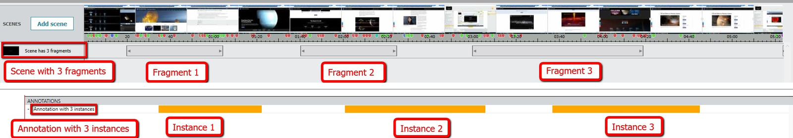
![Recording editor of a vendor skydiving screen recording with the Create Scene dialog open and yellow numbered steps: 1 Add scene, 2 Fragment Allocation Policy with Variable segments allocated manually, Fixed sized segment allocated automatically, and Fixed sized segment allocated manually selected, 3 Generated Result Type Image or Video with Video selected, 4 the sliding bar at 02.05.283, 5 the time window with Start 91.032 and End 150.032, and 6 OK; the SCENES timeline below shows SCENE_River and SCENE_Skydiving as gray intervals; the skydiver is seen from behind in a helmet](../assets/ws7/figures/scene_create_video_scene.png)
The analysis decides who is in the export. A new analysis starts with Add Analysis beside the study in the Library and four steps: SEGMENTATION SETTINGS, SEGMENTATION CRITERIA (Gender, Age, Flow, Group, and advanced options such as data quality metrics), SIGNAL PROCESSING, and SELECT STIMULI ("all stimuli, by default"). Survey exports "only consider the respondents and slides included in the analysis," and the Export: Survey data article advises to "first create a 'master-analysis' (including all respondents/all slides)." The plan follows that advice for every analysis export: one master analysis with every respondent and every stimulus, and the rules applied afterward in code, where each exclusion is logged and can be undone. Leaving a respondent out of the iMotions analysis instead removes the person from every file with no line in the cleaning log to say why.
Segments still help after the rules, for example to show a client an aggregate of the analysis sample only. A legacy option filters an analysis's respondents with a file: choose "CSV filter" in the respondent panel, browse to a file that holds "the desired respondent names in a column," say whether it has a "Header on first line," and give the "Column containing respondent name." The article is marked Legacy, so whether the filter still exists in Lab 11.1 is an item to verify.
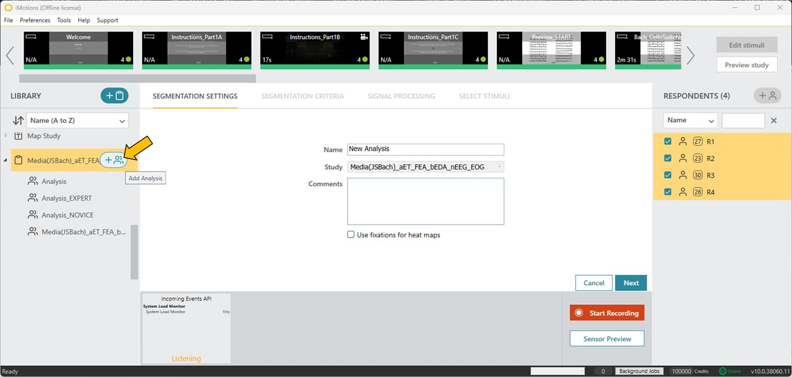
![Above, a Notepad window GSR Summary Scores_mod holding a GSR summary export with the columns Study Name, Respondent Name, Gender, Age, Group, Type, Label, Start (ms), Duration (ms), Signal Duration (ms), Parent Stimulus, Has Peaks and Peak Count, in which only respondents R2 to R5 remain with three Baseline rows each; below, the Select CSV file dialog with the text Browse for the CSV file containing respondent names to filter, a path beginning C:\Users\, a Browse button, Header on first line ticked, Column containing respondent name set to 2, Cancel and Ok, beside a respondent list with CSV filter selected and R2 to R8 ticked](../assets/ws7/figures/segment_csv_file_and_filter_dialog.png)
Storage, backups, and privacy
The lab once lost the studies on a computer that became unavailable and recovered those that had been saved as study zip files. A study that exists only inside one computer's iMotions database is one hardware failure away from loss; so are exports that were never saved anywhere else.
A study zip is the whole study saved as one .zip file: right-click the study, then Save To File (".ZIP file (for backing up studies/data or transferring studies to other computers)"), or save every study at once with Tools, then Save all studies to file, then Backup; File, then Load Study From File, brings it back. Save it to a local drive and copy it afterward, because the iMotions article warns that saving study files straight to external drives or cloud folders can corrupt them, and avoid "extracting, unzipping, or making edits."
The lab manual turns this into a routine (section 8.3): back up "Immediately after each session" to the lab server, at the end of the day to an encrypted external drive or the approved cloud (OneDrive for Business), weekly in full offline, and monthly off site; "Document these backups"; and keep "at least 3 copies of any irreplaceable raw data." In practice: after each collection day, save the study zip and the exports into the study folder, mark the raw exports read only, and copy both. "Always de-identify data before cloud if possible." Face video needs extra care: the Data Handling article suggests exporting "a version of your study without facial recordings," and Save To File can exclude the camera recordings, but only after any post processing of the videos is finished, as the iMotions privacy FAQ notes. Keep raw data "at least 7 years" and processed data 5 years (section 8.4), and "Always check the IRB protocol" in case it sets another period. Before you promise a participant anything about storage or sharing, read on the privacy implications of eye tracking (Kröger et al., 2020) and the practical tips for ethical data sharing (Meyer, 2018).
Help center articles for this section: Data Collection Overview · Export: R Processed Respondent Statistics · Respondent informed consent and data privacy FAQ · Annotations · Scene Editor · Export: R Processed GSR Files · Replay and Analysis Windows · Export: Survey data · Clone, Save, and Import iMotions Studies. Manual PDFs on this site: Data Handling and [Legacy] Respondent Segmentation using a CSV file (PDF only; no online article).
Set up folders and file names under the lab rule, write exclusion rules before collection and say why, name respondents with codes and record every recording and rerun in a session log, plan the annotations, scenes, and master analysis that decide the rows of every export, and plan the backups that keep raw data safe.The worked example
Everything in sections 01 and 02 fits on one page, the first deliverable of any study in this lab. Below is the SIMULATED Multimodal Ad Study as a one page plan, a screen based lab study like those of Workshops 2 to 4; read it as a template for your own. After it comes the export bundle the study produced: the files you will open, check, clean, and merge in the rest of the workshop.
No person was recorded, no camera or sensor was switched on, and no file from a lab study was used. One script, make_simulated_data.py (seed 20271231), wrote every file; the participants are codes, P01 to P24; and no number in this workshop may be quoted as a finding. Every file starts with one line, "# SIMULATED DATA", that a real export does not have, and all row numbers in the workshop materials count that line.
- Question
- Among 24 participants (simulated) who watch two 30 s video ads for reusable water bottles in the lab, is brand recall higher when the Logo was fixated, do participants whose faces show more Joy like the ad more, and do the ads raise skin conductance peaks above a resting Baseline?
- Hypotheses
- H1: brand recall is more likely when the Logo was fixated (AOI by survey). H2: more Joy goes with more liking (FEA by survey). H3: GSR Peaks Per Minute are higher during each ad than during Baseline (GSR). Every test is two tailed at alpha .05.
- Design
- One participant at a time at the lab desktop (Key 0002), November 16 to 20, 2026 (simulated dates). Within subjects: everyone sees both ads. The order is counterbalanced, odd participants AB and even participants BA, and typed by the operator into Group.
- Sensors
- Smart Eye Aurora (60 Hz); the respondent camera with Affectiva AFFDEX (about 30 frames per second); a Shimmer3 GSR+ (GSR and PPG, 128 Hz), one of the lab's two units, Shimmer3-8956 or a second unit called Shimmer3-B here (a placeholder name).
- Stimuli and lengths
- Instructions (self paced); Baseline (a 60 s gray screen with a fixation cross); Ad_A (30 s, the fictional brand ALTAVO, a hiking scene); Ad_B (30 s, the fictional brand BRENLOW, a cycling scene); Questionnaire (an iMotions survey slide). All lengths are those of the simulated study.
- AOIs
- On each ad, active for the whole ad: Logo (top left, small), Product (center), and Headline (bottom).
- Annotation
- One Stimulus annotation per ad, EndCard, from 25,000 to 30,000 ms after the ad starts (simulated).
- Survey items
- Question IDs Liking_A and Liking_B (1 to 7); Recall_A and Recall_B (which brand was advertised in the hiking ad and in the cycling ad: ALTAVO, BRENLOW, CASKEL, DORVANE, or I do not remember), scored 1 for the advertised brand and 0 for any other answer by an answer key written in the protocol; ATT_1, ATT_2, and ATT_3R (attitude toward reusable water bottles, 1 to 7), where ATT_3R is a reverse worded item, recoded as 8 minus the answer before the three are averaged; and PI (purchase intention, 1 to 7).
- Respondent details
- Name: the participant code, with _rerun added for a rerun. Gender and Age as the participant gives them. Group: AB or BA.
- Rules
- Written in the protocol on 2026-11-09 (simulated), before collection. R1: use only recordings the session log marks for use. R2: exclude a participant from all analyses when eye tracking quality is below 90 percent or AFFDEX quality below 80 percent on either ad. R3: for GSR analyses only, a stimulus is missing when Signal Duration is below 80 percent of Duration.
- Export plan
- Analysis exports from one master analysis with every respondent and stimulus: Sensor Data (Baseline, Ad_A, and Ad_B; eye tracking, AFFDEX, and GSR) for the raw data checks; the AOI Metrics Export, individual and aggregated files, for H1; the FEA Metrics Export (threshold 50; Joy, Engagement, and Brow Furrow) for H2; GSR Peak Metrics for H3 and R3; the Full Survey response and Survey Statistics for the survey items; the annotation export for the EndCard window and the clock checks. From the study: the data quality file for R2. From the operators: the session log for R1.
- Tests (section 08)
- H1: Fisher's exact test on the 2 by 2 table of Logo fixated by brand recalled, pooled over the two ads, repeated for each ad, and checked with a mixed model. H2: a mixed model of liking on Joy (per 10 percentage points) and the ad, with correlations for each ad. H3: paired t tests of each ad against Baseline with the effect size dz, Wilcoxon signed rank tests as checks, and Holm's correction over the two ads.
- Output files
- prepare_data.R (21 STEP blocks, STEP 0 to STEP 20) writes analysis_ready_long.csv (one row per participant and stimulus; 72 rows and 29 columns, simulated; include = 1 marks the analysis sample), analysis_ready_wide.csv (one row per participant; 24 rows and 34 columns), codebook.csv (57 rows), cleaning_log.csv (20 entries), and qa_report.txt. analysis.R writes analysis_output.txt, SIMULATED_test_results.csv, and SIMULATED_descriptives.csv. The Excel route builds the core of the same table in SIMULATED_data_prep.xlsx, guided by excel_walkthrough.md.
- Deliverables
- The two analysis ready tables with the codebook, the cleaning log, and the QA report as supplementary materials; a data preparation paragraph with counts at every step and a participant flow table; the three tests in APA style; and a plain language summary for the client (sections 09 and 10).
The test names return in section 08. In brief: Fisher's exact test asks whether two yes or no variables are related and stays exact in small samples; a mixed model gives each participant a starting level of his or her own, so that two observations from one person are not counted as two people; the Wilcoxon signed rank test repeats the paired comparison on ranks; dz is the mean difference divided by the standard deviation of the differences; and Holm's correction adjusts the p values when two tests answer one hypothesis.
The iMotions screens show measures like these, and they are for looking, not for testing. The two screenshots below come from vendor example studies, not from the simulated study. The AOI metrics table shows each metric averaged over the respondents of the analysis (Respondent base 8 in the vendor example), one number per AOI; the Replay window shows one respondent's GSR peak metrics for a whole stimulus (Peaks per minute = 3.87 in the vendor example). The plan needs neither: H1 takes one Logo value per participant and ad from the individual AOI file, and H3 one Peaks Per Minute value per participant and stimulus from the GSR export, which also covers scenes and annotations.
![AOI window of the vendor analysis Basket_Gorilla with tabs REPLAY, AGGREGATE and AOI: at the left, the AOI metrics menu with the groups Information, Gaze based metrics, Fixation based metrics and Saccade based metrics, each metric with an eye icon; in the middle, the stimulus frame with a Draw AOI button, the boxes AOI 1 and AOI 2, a gray band labeled Face hidden over the players' heads, and the line copyright (c) 1999 Daniel J. Simons. All rights reserved.; at the right, the AOI metrics table with columns AOI 1, AOI 2, Pass, Gorilla1 and Player and rows such as Stimulus duration 24644.4, Size (px2) NA, Valid data 98.6, Respondent base 8, Respondent ratio (%) 100 and Dwell time (ms) 17244 for AOI 1; an AOI TIMELINE below shows when each AOI is active](../assets/ws7/figures/aoi_metrics_table_basket_gorilla.png)
![Left, the Replay menu icons with their names Respondents, Recordings, Visualization, Signals, Markers, Annotations, AOIs and Export; right, the Replay window of the vendor study Deconstruction for respondent R1 with the Signals panel open: FEA thresholding, GSR Peak Detection with GSR Interpolated, Tonic Signal, Phasic Signal, Peak Detected (selected), Peak Amplitude, Peak Occurrences and Signal Interpolation, an I-VT filter group, and GSR Peak Detection Metrics reading Peak count = 40, Peaks per minute = 3.87 and Average peak amplitude = 0.0302; the SIGNALS panel plots detected peaks as green bars above the EDA signal over 10 minutes; the cellist in the stimulus video and the respondent in the webcam pane are each covered by a gray box labeled Face hidden](../assets/ws7/figures/replay_analysis_window_gsr_metrics.png)
The export bundle
The bundle, SIMULATED_export_bundle.zip, holds 18 files in 8 folders, as the lab would receive them after collection. Its README.md states for every file what is documented, meaning that an iMotions article or screenshot prints the name or layout, and what is modeled, meaning that the workshop chose it where the manuals are silent and it must be verified on the lab computer. The table condenses README section 3; all row counts are simulated.
| Folder and files | What it holds | Data rows (simulated) | Documented, and modeled |
|---|---|---|---|
| 01_Sensor_Data: 001_P01.csv to 007_P06.csv (7 files, among them 004_P04.csv and 005_ | One file per recording for P01 to P06 only (a full export would have 25, one per recording); Baseline, Ad_A, and Ad_B; eye tracking, AFFDEX, and GSR | 5,148 to 26,221 per file | Documented: the #INFO, #METADATA, and #DATA blocks, the first header columns, Timestamp from the recording start, interleaved devices. Choices where the manuals disagree: comma separator; Logo_active and Logo_gazed. Modeled: the file name pattern, the Aurora and PPG channel names, the device names. |
| 02_AOI_Metrics: Individual | Individual: one row per participant, ad, and AOI. Aggregated: one row per ad and AOI, averaged over every respondent in the analysis | 144; 6 | Documented: the metric names, such as Dwell time (ms) and TTFF AOI (ms); the 100 ms dwell threshold. Modeled: the file names, the identifier columns, the prefix Gaze for gaze based metrics, NA for an AOI never fixated. |
| 03_FEA_Metrics: FEAMetrics.csv | Percent of time at threshold 50 for Joy, Engagement, and Brow Furrow, per recording, stimulus or annotation, and expression | 510 | Documented: the shared R metrics columns and the Type values. Modeled: the file name and the metric columns. |
| 04_GSR_Metrics: GSRPeakMetrics.csv | Peak Count, Peaks Per Minute, and Signal Duration (ms) per recording and stimulus or annotation | 170 | Documented: every column, as Export: R Processed GSR Files lists them. Modeled: the file name, the #METADATA lines, the zero point of Start (ms). |
| 05_Survey: MERGED_ | The full survey response (one row per respondent); the statistics (one row per question); a copy of the statistics that a student opened and saved again in Excel, which is not an iMotions export (section 05) | 24; 8; 8 | Documented: both iMotions file names; STUDY, RESPONDENT, GENDER, AGE, and GROUP followed by LABELID_ and LABELVALUE_ pairs; the statistics columns. Modeled: the tab separator and the exact header text. |
| 06_Data_Quality: SIMULATED Multimodal Ad Study_ | Sampling rate and quality (percent of data obtained) per device, per recording and stimulus | 122 | Documented: the ending _DataQuality.txt, two #Study lines above the header, Respondent_Name, Stim_Name, and a SamplingRate and Quality pair per device. Modeled: the tab separator, the device names, the date format. |
| 07_Annotations: Individual Annotation Data.csv; Aggregate Annotation Result.csv | EndCard start, end, and duration per respondent and ad; the average per ad | 48; 2 | Documented: the screenshot columns, a Segmentation line above the header, times from the stimulus onset, comma separated. Choice: the .csv names (the article also gives .txt "Marker" names). |
| 08_Session_Log: SIMULATED_ | One row per recording, with the columns listed in section 02 | 25 | Modeled throughout, after Project doc 06; saved as CSV so that R can read it. |
Read the row counts as a first check, not as trivia. Some are plain multiples of the design (144 = 24 participants by 2 ads by 3 AOIs, simulated), and some are not (170 rows of GSR metrics, 122 rows of data quality, 510 rows of FEA metrics); section 06 asks you to explain every count before you trust a file. The Sensor Data folder holds six participants only, to keep the bundle small, and six are enough for the raw data checks.
What does modeled mean for you? A modeled name is a careful guess from the manuals, and code that expects it will fail, or worse, read the wrong column, if the real export differs. Before real data go through this pipeline, export a demo study on the lab computer, compare each file's names, separators, and header lines with the bundle, and correct the script and the codebook where they differ. README section 5 lists ten items to verify, from the Sensor Data separator to the meaning of Start (ms) and the Excel settings on the lab computers; section 11 repeats them.
Help center articles for this section: Export: Sensor Data · AOI Metrics · R Notebook (FEA): Facial expression analysis thresholding and aggregation · Export: R Processed GSR Files · Export: Survey data · Export: Data Quality Statistics · Export: Annotations · Replay and Analysis Windows. Data files: SIMULATED_export_bundle.zip and README.md.
Write the one page plan of a multimodal lab study, match each hypothesis and rule to the files that answer it, read the bundle's file list with its row counts, and say which names and layouts are documented and which are modeled and must be verified.Getting every export out
iMotions does not hand over one data file. It writes many exports, and each answers one question at one unit of analysis: Sensor Data holds one row per sample, a metrics export one row per respondent and interval, the survey matrix one row per respondent. The three hypotheses of section 03 need five export families plus the lab's session log, so this section takes every family in turn. The word "Export" appears in several places, so start with the map.
| Place | How to reach it | What it writes | Level |
|---|---|---|---|
| Analysis Export view, tab BUILT IN PROCESSING | Click the analysis, then Export in the analysis toolbar | Survey ("Survey data per Respondent", "Full Survey response", "Survey Statistics"); Annotations ("Annotation data"); Sensor Data ("Sensor Data"); Media ("Respondent Cam Recordings", "Environment Cam Recordings", "Screen/Scene Recordings") | Analysis |
| Analysis Export view, tab R PROCESSING | The same view, second tab | The metrics files of the R notebooks, such as "AOI Metrics Export", "FEA Metrics Export", "FEA Raw Data Statistics Export", and "Respondent Statistics Export" | Analysis |
| Study tab RECORDED DATA | Click the study name in the Library | The data quality file (Export, top right); the exposure summaries (Calculate) | Study |
| Study tab EXPORT (older releases), or right-click the study > Export | Library | Sensor Data, Exposure Summaries, and the three camera and screen recordings | Study |
| Replay, Aggregate, and AOI windows | The Export menu of a replay | Images (.png) and videos (.wmv, .mp4) of the replay | Analysis |
| Right-click the study > Save To File | Library | The whole study as a .zip, for backup and transfer, not for analysis | Study |
The first three rows were confirmed on the lab computer on October 10, 2026 (iMotions Lab 11.1.47136.14). The other paths come from articles written for releases 8.0 to 10.0.7, and every 11.1 label not yet confirmed is on the Items to verify list (section 11).
(1) Export from one master analysis that includes every respondent and every stimulus; the exclusion rules are applied later, in code (section 07), never by leaving people out of an analysis. (2) Never type a participant's name where iMotions can see it: codes only, with the key that links codes to names stored apart from the data (lab manual 2.4). (3) Copy every export, unchanged, into the study's raw data folder on the day it is made, and back it up (lab manual 8.2 and 8.3): the lab once lost the studies on a computer that became unavailable and recovered only those saved as study zip files.
4.1 Before the first export: respondent details and the master analysis
Why. The Sensor Data, metrics, survey, and annotation exports copy four respondent details, Name, Gender, Age, and Group, as they stand at the moment of export. The details "can be adjusted at any time" (Data Collection Overview), but a file exported before a correction keeps the old value. In the worked example Name is the participant code and Group holds the order of the ads (AB or BA).
- Check the details. Click the study, click a respondent's name, and open "RESPONDENT DETAILS". You should see Name, Gender, Age, Group, and Comments. Common mistake. Leaving the defaults, Gender OTHER, Age 0, and Group Default, which the exports then report as if they were data (STEP 9 in section 07 shows what the pipeline does with them).
- Correct, then export. Change the value and click "Update" (the path given in Export: R Processed Respondent Statistics). Export again every file that was made before the change.
- Create the master analysis. Right-click the study, choose "Add Analysis", and keep every respondent and every stimulus selected. Survey exports "only consider the respondents and slides included in the analysis", and the article advises a "master-analysis" first (Export: Survey data). You should see the new analysis under the study in the Library. Common mistake. An analysis of only the respondents who looked good on screen: that is an exclusion made by eye, without a rule.
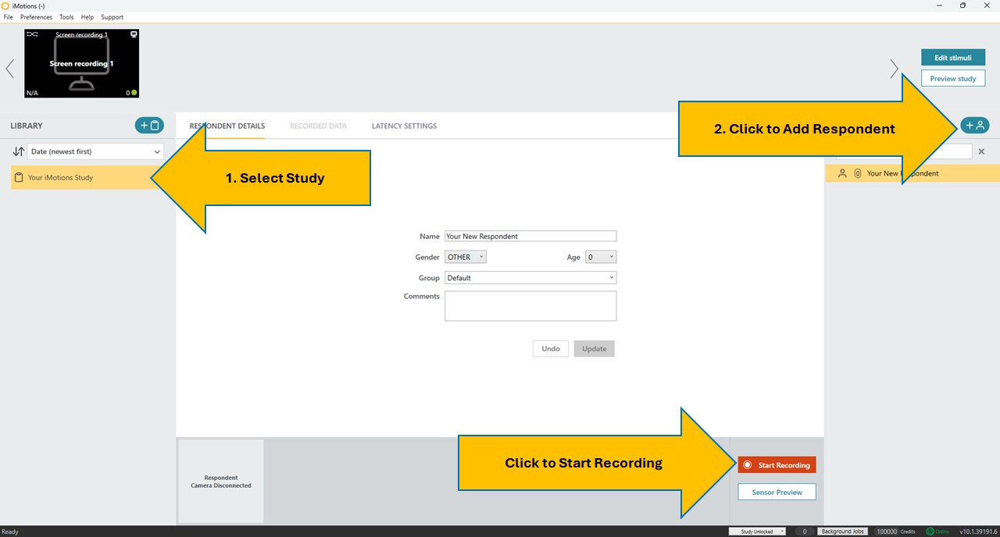
4.2 The data quality file and the exposure summaries
Why. Rule R2 is applied to the data quality file, which "saves a file (.txt) with basic statistics": "the effective sampling rate of the devices used, and the percentage of data obtained", one row per respondent and stimulus. It is "available immediately after a recording has ended", so the lab exports it at the end of every collection day.
- Open the tab. Click the study in the Library and open RECORDED DATA. You should see a tile for each stimulus with a sampling rate and a percent for each sensor and, at the top right next to the grid and list view buttons, Export.
- Export. Click Export and save the file into the study folder. You should see a file whose name ends in "_DataQuality.txt": two lines that start with "#Study", then the columns Respondent_Name, Stim_Name, and a "_SamplingRate" and a "_Quality" column for each device. Common mistake. Exporting before every respondent name is final: the file keeps the names as they were when it was written.
- Calculate the exposure summaries. An exposure summary "enables the interface to show data quality % and the sample data recorded" for the study, each respondent, or each stimulus. On the same tab, click "Calculate" next to "Exposure summaries" ("A new exposure summary needs to be calculated when the study contains new data"). It "can also be exported as a CSV file" from "the right hand corner of the central interface"; where that control sits in 11.1 is not confirmed (Items to verify).
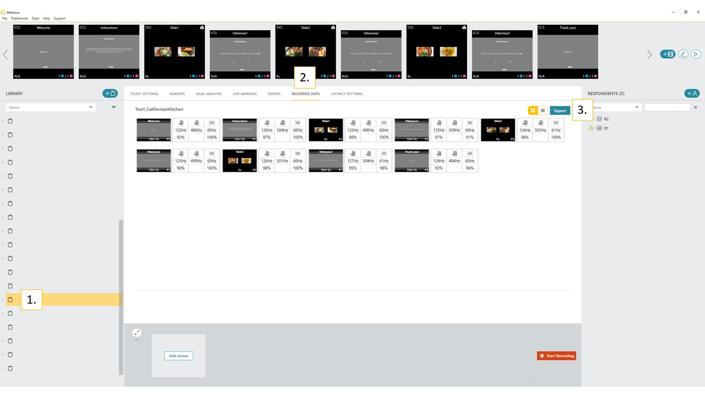
![Above, the RECORDED DATA tab of the study WebUX(Visit CPH)_RET_FEA_GSR at the study level with stimulus tiles, Exposure summaries with a Calculate button, Affectiva with Post Process, and RESPONDENTS (3); below, the exposure summary CSV in a spreadsheet with the lines #Study Name : WebUX(Visit CPH)_RET_FEA_GSR and #Study Date : 17-07-2018 14:10:22 and the columns Stim_Name, Shimmer Shimmer GSR/EDA_SamplingRate, Shimmer Shimmer GSR/EDA_Quality, Affectiva AFFDEX_SamplingRate, Affectiva AFFDEX_Quality, Eye tracking_SamplingRate, and Eye tracking_Quality](../assets/ws7/figures/exposure_calculate_and_summary_csv.png)
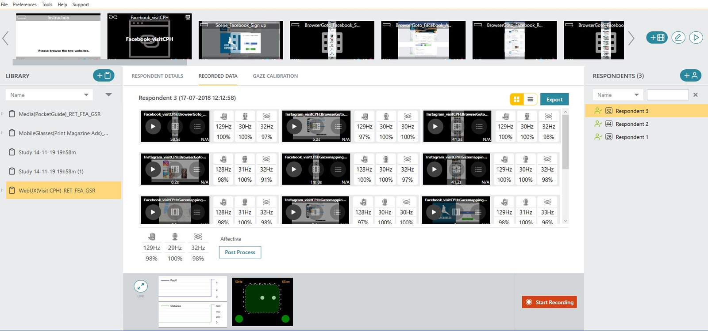
4.3 Sensor Data: every sample, one file per respondent
Why. The Sensor Data export is the raw record: "every row of data in the export file refers to a unique moment on the timeline", with no "down-sampling, filtering, smoothing, etc." Devices are interleaved, not resampled: the Aurora adds 60 rows per second and the Shimmer 128, and each row holds one device's sample while the other devices' cells stay empty. (The lab manual, section 6.5, describes signals "resampled to a common timeline"; this workshop follows the iMotions article.) The file is not a table for tests but the evidence against which the metrics files are checked (section 06).
- Open the editor. Click the analysis, click Export in the toolbar, stay on BUILT IN PROCESSING, select "Sensor Data", and click the blue Export button. You should see the pages Respondents, Stimuli, Sensors, and File Info.
- Choose respondents and stimuli. Select all, or sort by a group and then select all. The worked example takes every respondent and the stimuli Baseline, Ad_A, and Ad_B.
- Choose the sensors. Switch on a device or tick single channels. "As soon as at least one data channel is selected, a preview of the export files is shown." Notebook signals are "not listed here, but exported from the 'File info' page."
- Set File Info. Tick "Study properties", "Channel headers", and "Channel meta data" (they write the #INFO block, the row of column names, and the #METADATA block), "Include AOI markers", "Include Annotation markers", and "Repeat stimulus name"; under Additional data, tick "Processed and imported data" for notebook signals. A newer screenshot adds "File extension:" ("csv") and "Separator:" ("Comma ," or "Tabulator"). Common mistake. Not writing down the separator: the article's text says .csv while its description panel says "The file is tab separated", so record what you chose (Items to verify).
- Export. Choose the folder and click Export. You should see one file per respondent. In the manuals' screenshots files are named like "001_A.csv", a three digit number and the respondent name (an inference to verify). The number appears to be the respondent's position in the study, not a participant number, so read the name from the "#Respondent Name" line inside the file.
Keyboard and mouse events come through the same editor: tick "User generated events" under Additional data, and keep at least one signal ("Even if you only wish to export Events, you always need to include at least one signal"). They exist only in Screen-based studies, and the exact column header is not documented (Items to verify).
![Sensor data export editor on the Sensors page with numbered boxes on the pages Respondents (1), Stimuli (2), Sensors (3), and File Info (5): Eyetracker Tobii Pro Nano (6/15) switched on with ETGazeLeftx, ETGazeLefty, ETGazeRightx, ETGazeRighty, Left pupil, and Right pupil checked, Shimmer 9B8D ECG (0/17) off, and Shimmer 8E7F GSR (1/14) on; Show signal descriptions at the upper right; the DATA PREVIEW (4) with the columns Row, Timestamp, EventSource, SlideEvent, StimType, Duration, CollectionPhase, SourceStimuliName, then eye tracker and Shimmer columns each after an EventSource column; and Respondents (2/2), Sensor data (7/46), and Export (6)](../assets/ws7/figures/sensordata_editor_sensors_page.png)
![File Info page of the sensor data export editor: File output location ending in Documents\iMotions\Export\Mobile(Magazine Shopping)_mET_GSR_Merged\Analyses\Analysis\Sensor Data with Browse and Show descriptions; the option groups Study properties and meta data (Study properties, Channel headers, and Channel meta data checked), Additional data, AOIs (Include AOI markers checked), Annotations (Include Annotation markers checked), Scene and Gazemappings, Stimulus and event source markers (Repeat stimulus name checked), and Other options (Round timestamp to milliseconds, Merge respondents to one file, and Continously update data preview checked); the DATA PREVIEW shows Timestamp values with many decimals; Respondents (2/2), Sensor data (37/66), Export](../assets/ws7/figures/sensordata_file_info_options.png)
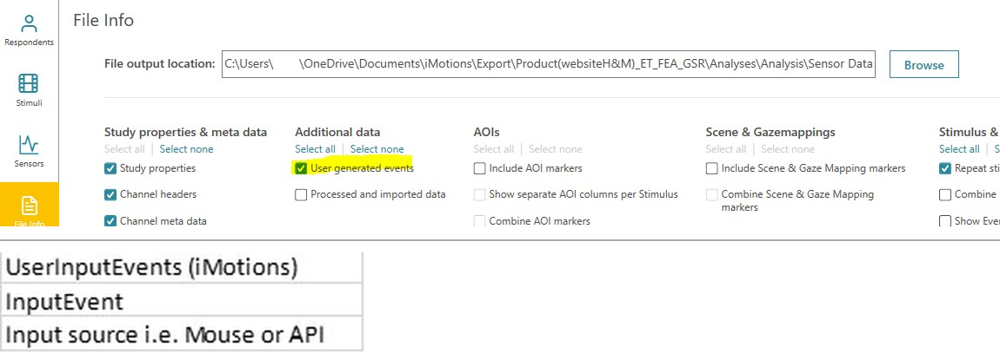
4.4 R PROCESSING: the metrics files the tests use
Why. The hypotheses are tested on metrics exports, numbers per respondent and interval that R notebooks compute: peaks per minute, percent of time with Joy, dwell time on the Logo. They list results "for every respondent included in the analysis and for every stimulus, scene, or annotation present in the study". Most exist only after their notebook has run, and since release 11.0 an export appears only "for the corresponding sensors and recorded data".
- Open the tab. Click the analysis, Export, then R PROCESSING. You should see "Individual metrics exports" or "Single multi-modal export", one switch for each export the study can produce, and "Export individual files". On the lab computer a demo study listed switches such as AOI Metrics Export, Eyetracker Blink Detection Metrics Export, Eyetracker PERCLOS Metrics Export, FEA Blink Detection Metrics Export, FEA Metrics Export, FEA Raw Data Statistics Export, and Respondent Statistics Export, but no GSR or EEG export, because its copy held no data those notebooks can process.
- Keep "Individual metrics exports", one file per export. "Single multi-modal export" merges metrics "into one file", but its columns are not documented, so the worked example uses individual files.
- Switch on each export and open its settings (table below). Common mistake. Exporting only an aggregated file: it averages every respondent in the analysis, before any exclusion, and leaves nothing to test.
- Export. Click "Export individual files" and save. You should see one file per export. Whether each is .csv or .txt, and which separator it uses, differs between articles (Items to verify).
| Export (switch) | Needs first | One row per | Settings to choose and record |
|---|---|---|---|
| AOI Metrics Export | AOIs drawn and their metrics calculated in the analysis | Respondent, stimulus, and AOI ("Individual AOI metrics"); stimulus and AOI ("Aggregated AOI metrics") | Tick both files: "For statistical comparison, we recommend exporting the Individual AOI metrics." Record "Threshold for dwell classification" ("by default set to 100 ms"). |
| FEA Metrics Export | The FEA thresholding notebook | Respondent and interval (Stimulus, Annotation, Scene) | "Expression metrics" (how often and how long); "Expression table" only for one row per expression instance |
| GSR exports: "GSR Peak Metrics", "Moment To Moment Statistics", "GSR Peak Table" | The GSR peak detection notebook | Respondent and interval (Peak Metrics); one row per peak (Peak Table) | The 11.1 switch name is not confirmed; an older article calls it "GSR Metrics Export" |
| EEG Frontal Asymmetry Metrics Export, EEG Power Spectral Density Metrics Export | The EEG notebooks | Respondent and interval | One column per band (frontal asymmetry) or per electrode and band (power spectral density) |
| FEA Raw Data Statistics Export | Nothing: "Leaving the "Active flows" blank is fine." | Respondent, interval, and facial marker (a long file) | "Included statistics" and "Include events" |
| Respondent Statistics Export | Nothing: "it is built in iMotions already" | Two stacked tables in a .txt file: counts and ages by Group and Gender, then one row per respondent | A sample description and a check of the details, not a table to merge |
![R PROCESSING tab of the analysis Export view with yellow numbered boxes: the Analysis in the LIBRARY (1), the Export button (2), R PROCESSING (3), the choice Individual metrics exports or Single multi-modal export (4), the switch of AFFDEX Metrics Export (5), its SETTINGS with Include Emotions metrics, Include Valence, and Include Action Units metrics checked, Classify each facial expression as short or long unchecked, and Time threshold [in sec] 1 (6), and Export individual files (7); ECG Metrics Export and AFFDEX Blink Detection Metrics Export are switched off](../assets/ws7/figures/rproc_r_processing_individual_metrics.png)
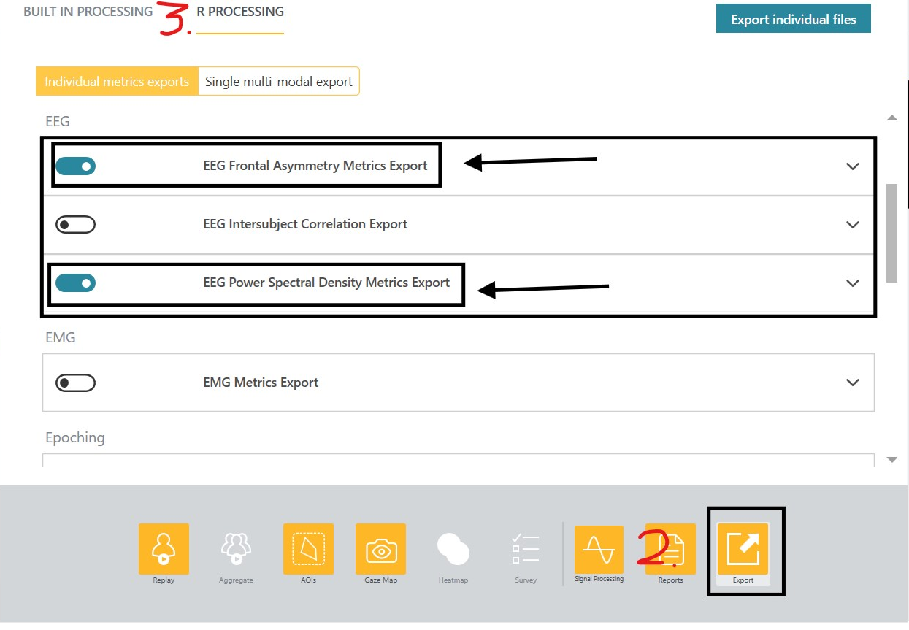

4.5 Survey and annotation exports
Why. The survey answers and the annotation intervals come from BUILT IN PROCESSING with no notebook, from the same master analysis.
- Survey. Click the analysis, Export, BUILT IN PROCESSING; under Survey choose "Full Survey response" and click the blue Export button. You should see the file MERGED_SURVEY_RESPONSE_MATRIX.txt, "only one .txt file for the entire analysis", with one row per respondent and the answers in LABELID_ and LABELVALUE_ column pairs (section 07 reshapes them). Export "Survey Statistics" (SurveyStatistics.txt) too, as a check only. "Survey data per Respondent" writes one file per slide in the text and one per question in the description panel (Items to verify). Common mistake. Testing with SurveyStatistics.txt: it holds one mean per question for everyone in the analysis.
- Annotations. Under Annotations choose "Annotation data" and click Export. "This option always saves two files": an individual file with each respondent's start time, end time, and duration "relative to stimulus onset", and an aggregate file with "the average duration and standard deviation". The article names them "Individual Annotation Data.csv" and "Aggregate Annotation Result.csv" in one place and "Individual Marker Data.txt" and "Aggregate Marker Result.txt" in another (Items to verify). Common mistake. Comparing these times directly with Sensor Data timestamps, which count from the recording start (section 06).
![Survey export at the analysis level of a study with the stimuli Slide1, Dilemma1, Slide2, Dilemma2, Slide3, and Dilemma3: on BUILT IN PROCESSING, Survey data per Respondent is selected (3) among Full Survey response and Survey Statistics, with the blue Export button (4) and a Description saying one file is generated per question and the file is tab separated; numbered boxes also trace the right-click path on the analysis to Export, Survey, and Survey Data Per Respondent, Full Survey Response, or Export Survey Statistics](../assets/ws7/figures/survey_export_options.png)
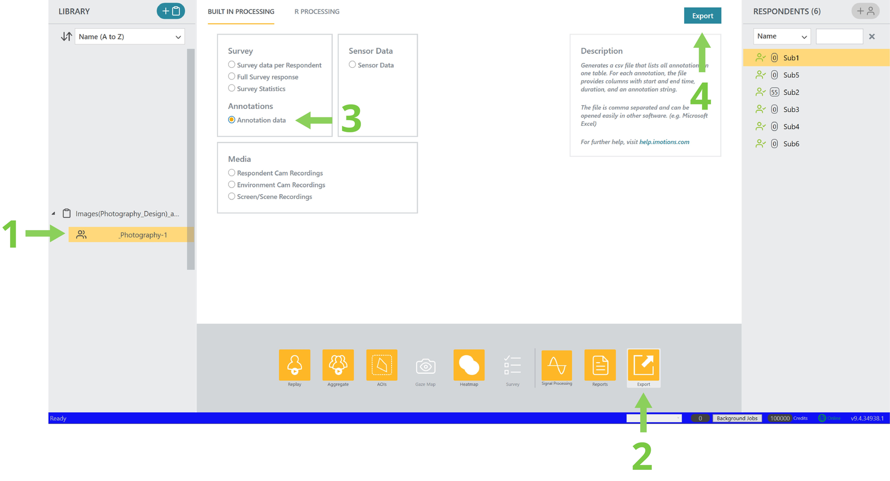
4.6 Media: replays, recordings, and why face videos stay in the lab
Recordings. "Respondent Cam Recordings", "Environment Cam Recordings", and "Screen/Scene Recordings" give "a separate video-file for every slide (i.e., stimulus) and respondent", as .wmv or .mp4. The article places them on the study's Export page; on the lab computer they also appear under Media in the analysis Export view. Audio is ".wmv" in one article and ".wav" in another (Items to verify). Replays. In a Replay or Aggregate window, edit the replay ("Edit replay" in the text, "Edit Result" on screen), open Export, and choose Image or Video. If a video export stalls, "try changing the video format of the exported video from mp4 to wmv."
Why face videos stay in the lab. A respondent camera video shows a face, the most identifying record a study holds, and renaming the file does not de-identify it. Data Handling notes that under the GDPR face recordings "may only be stored for a limited amount of time". So the lab exports face videos only for a use that the consent and the IRB protocol name, keeps them on lab storage (never email, a personal laptop, or an unapproved cloud folder), saves working study copies with "Exclude Respondent and Environment camera recordings" ticked, and deletes them when the consent says. Any file that could identify a person needs this care before it is shared (Meyer, 2018). Common mistake. Exporting the camera recordings "to have everything": each copy is one more face to protect, and the analysis needs only the numbers AFFDEX computed from the video.
![Above, the study level EXPORT tab of Test3_Blog with Screen/Scene Recordings selected (3) among Sensor Data, Exposure Summaries, Respondent Cam Recordings, and Environment Cam Recordings, the Export button (4), and a Description saying that one video file represents one respondent looking at one stimulus; below, the right-click menu of a study with Export open on Sensor Data, Exposure Summaries, Video, and Audio, and Audio open on Respondent Cam Recordings, Environment Cam Recordings, and Screen/Scene Recordings](../assets/ws7/figures/media_recordings_video_and_audio_export.png)
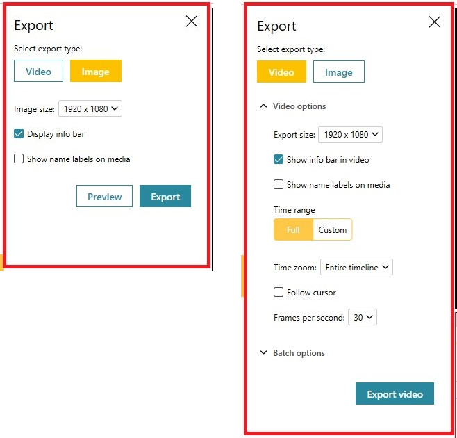
4.7 EDF files, for awareness
"Some analytical tools such as Acqknowledge require data to be in a .edf format", a standard file format for biosignals (EDF). The converter, toedf, takes a Sensor Data export saved with "Separator:" set to "Tabulator" and a JSON profile that names each channel, and runs in Command Prompt as toedf -input="filename.txt" -profile="biopac.json". The example device is a Biopac, which the lab does not own, the manuals give no profile for the Shimmer3 or the Enobio, and the text can be read as asking for "Round timestamp to miliseconds" (sic) off while its screenshot shows it ticked. For EEG, the lab manual (5.2) asks for a standard format such as .edf beside the NIC format, and NIC2 can save EDF+ itself, the simpler path. Use this route only when a collaborator's software needs EDF, and test it first.
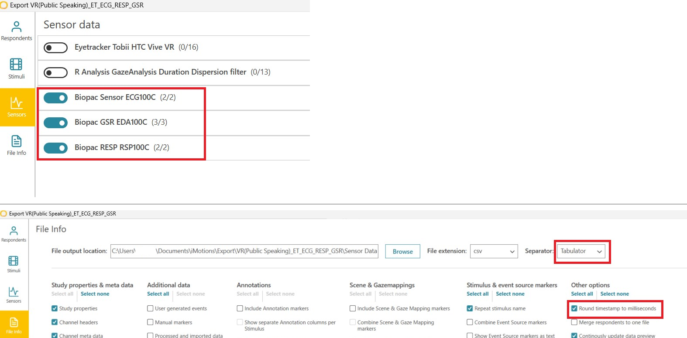
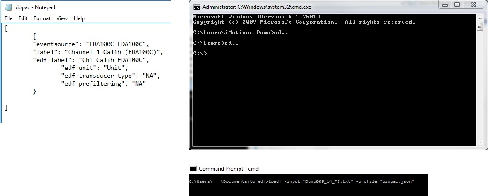
Help center articles for this section: Export: Sensor Data, Data Collection Overview, Export: Data Quality Statistics, Export: Exposure Summary, Using Event Markers, Export: Keyboard and Mouse Events, Export: Signal Processed Data, Areas of Interest (AOIs), AOI Metrics, R Notebook (FEA): Facial expression analysis thresholding and aggregation, Export: R Processed GSR Files, R Processed EEG Export Files, R Notebooks (FEA): AFFDEX Raw Data Statistics Export, Export: R Processed Respondent Statistics, Export: Survey data, Export: Annotations, Export: Respondent, Environment, and Scene Camera/Screen Recordings, Export: Images and Videos from Replays, Respondent informed consent and data privacy FAQ, and Export: Create EDF files from Sensor Data Export Files (iMotions 9 or newer). Manual PDFs on this site: Export: Sensor Data, Data Collection Overview, Export: Data Quality Statistics, Export: Exposure Summary, Export: Keyboard and Mouse Events, Export: Signal Processed Data, AOI Metrics, Export: R Processed GSR Files, R Processed EEG Export Files, R Notebooks (FEA): AFFDEX Raw Data Statistics Export, Export: R Processed Respondent Statistics, Export: Survey data, Export: Annotations, Export: Respondent, Environment, and Scene Camera/Screen Recordings, Export: Images and Videos from Replays, Data Handling, and Export: Create EDF files from Sensor Data Export Files (PDF).
Opening files correctly
An export is only as good as the way it is opened. Excel guesses how a file is laid out, and a wrong guess puts every value in one column, turns a decimal into text, or a code into a date, often without a message. This section opens the files of the worked example the way the iMotions articles prescribe, finds the table inside each file by rule, and shows the same files read in R as text. Without R, these Excel steps lead straight into the Excel route of section 07.
5.1 What is inside an export file
Why. Every export is plain text. In a CSV file (comma separated values) each line is a row and a comma separates the values; in a tab separated file a tab does. The character between values is the delimiter. "iMotions saves its data exports as csv files, with data columns being separated by a comma and decimals being separated with a dot", and you "must specify the delimiter as well as the decimal symbol" (Opening Data Export Files in Excel). Excel's defaults come from the Windows regional settings ("Decimal symbol" and "List separator", under Control Panel, "Change date, time, or number formats", "Additional settings"), so a computer set up for another region, such as the German settings of one of the manuals' example files, reads the same file differently. Nor is every export comma separated: the survey files are described as "tab separated". Look before you open: a copy in Notepad shows the delimiter and the lines above the table.
| File in the simulated bundle | Delimiter | Lines above the column names | Column names on line |
|---|---|---|---|
| 001_P01.csv to 007_P06.csv (Sensor Data) | comma | banner, #INFO block, #METADATA block, #DATA | 27 |
| GSRPeakMetrics.csv | comma | banner, #METADATA block, #DATA | 11 |
| FEAMetrics.csv, IndividualAOIMetrics.csv | comma | banner, #METADATA block, #DATA | 9 |
| AggregatedAOIMetrics.csv | comma | banner, #METADATA block, #DATA | 6 |
| MERGED_SURVEY_RESPONSE_MATRIX.txt, SurveyStatistics.txt | tab | banner | 2 |
| SIMULATED Multimodal Ad Study_DataQuality.txt | tab | banner, "#Study Name : ...", "#Study Date : ..." | 4 |
| Individual Annotation Data.csv, Aggregate Annotation Result.csv | comma | banner, "Segmentation: ...", an empty line | 4 |
| SIMULATED_AdStudy_SessionLog.csv | comma | banner | 2 |
| SurveyStatistics_student_copy.csv | semicolon | banner | 2 |
Line 1 of every simulated file is a "# SIMULATED DATA" banner that a real export does not have, so subtract 1 for a real file. The table comes from STEP 1 of prepare_data.R. The tab delimiter of the survey and data quality files and the blocks above the metrics headers are modeled, not documented (Items to verify).
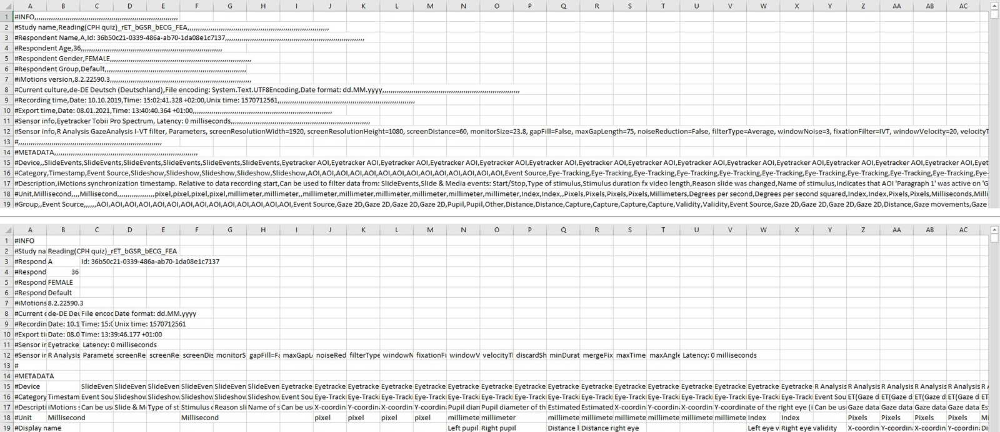
5.2 Route A: the Text Import Wizard
Why. Double-clicking lets Excel guess: "If you just open your export by double clicking the file or dropping it into Excel, it will be opened using the default parameters." Importing makes you state the delimiter, the decimal mark, and the first row. The steps follow the article and excel_walkthrough.md, section 1.
- Open through the dialog. File > Open > Browse, set the file type to "All Files (*.*)", select GSRPeakMetrics.csv, and click Open.
- Step 1 of 3. Choose "Delimited" (if the wizard says "The Text Wizard has determined that your data is Fixed Width", it guessed wrong), set "Start import at row" to 11 (the header line of the simulated file), "File origin" to "65001 : Unicode (UTF-8)", and tick "My data has headers". You should see Study Name,Respondent Name,... as the first preview line.
- Step 2 of 3. Tick "Comma" only. You should see the preview split into columns.
- Step 3 of 3. Select the Respondent Name column and set it to "Text"; click "Advanced..." and set "Decimal separator" to a dot and "Thousands separator" to a comma; click Finish. You should see 15 columns, from A (Study Name) to O (Average Peak Amplitude (microSiemens)), and 170 data rows (simulated). Cells that read NA are text, written where a value does not exist (no peaks, or no signal); leave them as they are.
Common mistake. Starting the import at row 1: the #METADATA lines become data and every column turns to text. The other files go on their own sheets the same way: the survey matrix with "Tab" and "Text qualifier" set to {none}, starting at row 2, because its column names hold commas and quotation marks (a text qualifier is the character that wraps a value containing the delimiter); the data quality file with "Tab" from row 4; the session log with "Comma" from row 2 (rows of the simulated files). Whether the lab's Excel offers this wizard as well as From Text/CSV is an item to verify.
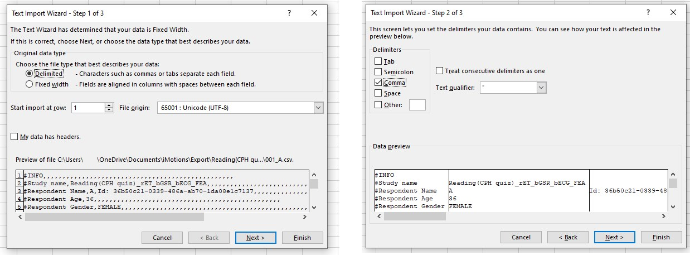
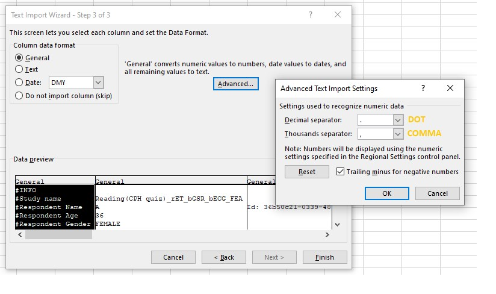
5.3 Route B: Data > From Text/CSV
- Open the preview. Data > From Text/CSV, then select the file. You should see "File Origin", "Delimiter", "Data Type Detection" ("Based on first 200 rows"), and the buttons "Load", "Transform Data", and "Cancel". The article trusts that "excel is smart enough to suggest the "correct" format"; check the delimiter it chose.
- Transform, do not load. Click "Transform Data". In Power Query, Excel's import editor, choose Home > Remove Rows > Remove Top Rows (10 for the simulated GSRPeakMetrics.csv), then Home > Use First Row as Headers, set Respondent Name to Text, and click Close & Load. Common mistake. Clicking Load at once: the # lines land in the table, and because type detection reads only the first 200 rows, which in a Sensor Data file are mostly # lines and empty cells, numbers can be typed as text. Check the numbers after loading.
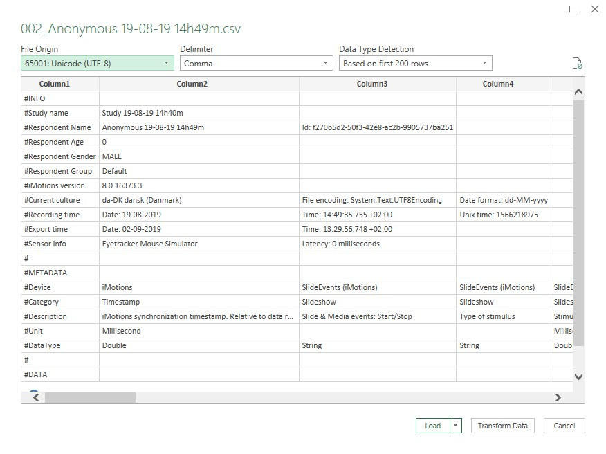
5.4 The lines above the header: find the table by rule
Why. iMotions writes information above the column names, and how much depends on the export and the release. A Sensor Data file starts with the #INFO block (study name, respondent name, age, gender, group, iMotions version, "#Current culture", recording and export times, one "#Sensor info" line per device), then the #METADATA block (for each column its device, category, description, unit, and channel identifier), then a line that reads #DATA; the header row is the next line. The manuals' screenshots put it on row 21, 26, or 29, so the only safe rule is: find the #DATA line, and the next line is the header; in a file without #DATA, it is the first line that starts with the expected first column name. Two lines repay reading: "#Current culture" records the regional settings of the exporting computer (de-DE and da-DK in the manuals' examples, en-US in the simulated files), and "#Respondent Name" holds the recording name. In the header itself, "EventSource" appears once in front of each device's columns, four times in the simulated files; the "#Device" metadata row says which is which.
The data quality file has "#Study Name : ..." and "#Study Date : ..." above its header, the annotation files a "Segmentation: ..." line, and the full survey response no block at all, while a per respondent survey file starts with a block that describes the question.
![Color coded illustration of a sensor data export file in a spreadsheet: #INFO in green on rows 1 to 14, #METADATA in yellow on rows 16 to 26, and #DATA on row 28, where row 29 holds the headers Row and Timestamp in blue, EventSource, SlideEvent, StimType, Duration, CollectionPhase, and SourceStimuliName in red, two EventSource columns each followed by data columns in gray, and Annotation1, Annotation2, ImageScene, and VideoScene in orange; the data rows show 1 in each EventSource column only where that device delivered a sample](../assets/ws7/figures/sensordata_file_structure_color_coded.png)
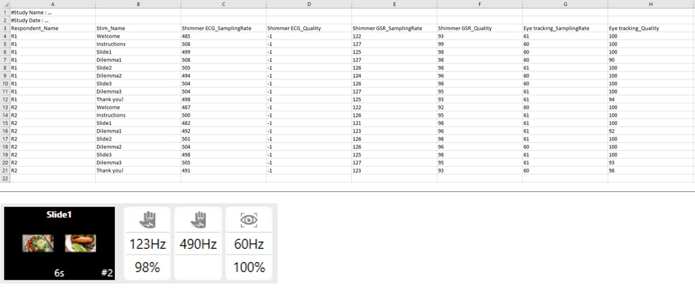
![Two survey export files: above, Survey data per respondent for one slide, with a header block (Multiple Choice Matrix, Question ID Choice, the headline question, Allow multiple choice NO, Number of Categories 2, Number of Questions 1, Attached to stimulus Slide1), the label table Label1 Left 1 and Label2 Right 2, and the columns STUDY, RESPONDENT, GENDER, AGE, GROUP, Question1.LABELID, Question1.LABELTEXT, Question1.LABELVALUE, and Question1.TIMING for R1 and R2; below, Survey statistics with the columns Stimulus Name, Question ID, Question Text, Average, Median, StdDev, and Count](../assets/ws7/figures/survey_per_respondent_and_statistics_files.png)
5.5 What Excel changes without asking, and the rule for raw files
Excel assigns a type to every cell it imports. A code with leading zeros such as 001 can lose them, a long number can turn into scientific notation, and text that looks like a date can become one: gene names in published supplementary files were turned into dates this way (Ziemann et al., 2016). A trailing space after a respondent code is invisible in a cell. So set key columns to Text during the import, keep calculations and formatting out of the data, and work on a copy (Broman & Woo, 2018). Above all, never save over a raw export. "csv files do not preserve formatting or newly opened tabs", so save your work as a new .xlsx file and keep the export unchanged and read only in its folder.
5.6 A file that was saved again: the student's copy
Open SurveyStatistics_student_copy.csv from the 05_Survey folder in Notepad, next to SurveyStatistics.txt. What separates the values, and how are the decimals written? Then double-click the copy and see what Excel makes of it.
The copy uses semicolons between values and commas as decimal marks (4,58 where the export has 4.58; simulated). It is not an iMotions export: a student opened SurveyStatistics.txt in Excel on a laptop set to German regional settings and saved it as CSV, and Excel wrote the file with that computer's "List separator" and "Decimal symbol". On a computer with United States settings, the copy opens as one column. STEP 4 of prepare_data.R reads it both ways: as an ordinary CSV it gives 1 column; with a semicolon delimiter and a comma decimal mark, 7 columns whose values equal the raw statistics (largest difference 0.0000; simulated). The decision is still to set it aside. Cleaning log entry 1 records the problem, "Copy saved again from Excel with German regional settings: semicolon separator and comma decimal", and the basis, "Raw exports are read only; never analyze a resaved copy".
5.7 The same files in R, read as text
prepare_data.R reads each file the way this section opened it in Excel, but by rule and with a record. STEP 1 lists every file with its header line and delimiter (the table in 5.1). The helpers of STEP 0 find the header with the #DATA rule and read every column as text with spaces kept (trim_ws = FALSE), so a key such as "P07 " stays visible until STEP 7 decides what to do with it; numbers are converted only after the keys are checked. STEP 4 reads the survey files as tab separated with quoting switched off (read as comma separated, the matrix gives "29 columns of nonsense"; simulated), and STEP 5 never treats # lines as comments, because annotation colors such as #FF9BBB59 start with #. Cards 0a to 5 in section 07 show the code and its output.
Help center articles for this section: Opening Data Export Files in Excel, Exports: Open iMotions Sensor Data in Excel, Export: Sensor Data, Export: Survey data, and Export: Data Quality Statistics. Manual PDFs on this site: Opening Data Export Files in Excel, Exports: Open iMotions Sensor Data in Excel, Export: Sensor Data, Export: Survey data, and Export: Data Quality Statistics (PDF). Data files: SIMULATED_export_bundle.zip, excel_walkthrough.md, and prepare_data.R.
Checking the data: counts, keys, ranges, clocks, and raw samples
A file can open cleanly and still be wrong: a name with a trailing space, a participant recorded twice, a clock that starts at another moment. None of these raises an error, and each can quietly drop a person from a test. Checking means asking each file a question whose answer you know in advance. The code is prepare_data.R (its cards are in section 07, by STEP number), and the answers are in prepare_output.txt. Each part starts with a question: run the STEP it names, or open the files as section 05 showed, and write down your answer before you read on. Every number below is simulated.
Three kinds of check, and three records
A count check asks how many respondents and rows remain after each step. A key check asks whether every participant appears once, under one spelling, in every file. A consistency check recomputes an exported number from the raw samples. Range and missing value checks compare each column with the codebook.
qa_report.txt, the quality assurance (QA) report: counts, files, keys, ranges, missing values, consistency checks, exclusions. cleaning_log.csv, the cleaning log: one row per decision (20 in the simulated run). codebook.csv, the codebook: label, source file and column, units, allowed range, and missing code for each of 57 variables.
The three records follow the advice on data organization in spreadsheets (Broman & Woo, 2018) and on good enough practices in scientific computing (Wilson et al., 2017).
Counts at every step
Write down the count you expect before each step, then compare (simulated). Step 1 reads 25 recordings for 24 participants, so someone was recorded twice. Mapping recordings to participants must not change the rows (170); rule R1 then removes the 2 rows of the aborted recording. The analysis stimuli leave 72 rows, 24 times 3. Each join must neither add nor lose a row: STEP 17 prints "+ data quality rows 72 -> 72" and the same for every other join. Rule R2 leaves 66 rows, rule R3 65 for GSR. A join that adds rows has found a duplicated key; one that loses rows, a key that does not match.
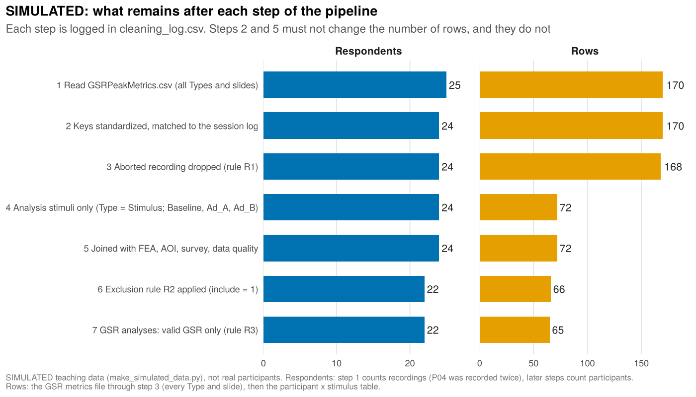
Key checks: one person, one spelling, every file
A key is the column a join matches on. The respondent key is Respondent Name in the R metrics and annotation files, RESPONDENT in the survey matrix, Respondent_Name in the data quality file, and the "#Respondent Name" line in Sensor Data. The session log is the roster of who must appear in every file. Try it: STEP 6 compares every raw spelling with the session log, character by character. Which keys fail?
| File (STEP 6, simulated) | Key column | Distinct names | Not matching the session log |
|---|---|---|---|
| GSRPeakMetrics.csv, FEAMetrics.csv | Respondent Name | 25 | (none) |
| IndividualAOIMetrics.csv, Individual Annotation Data.csv | Respondent Name | 24 | (none) |
| MERGED_SURVEY_RESPONSE_MATRIX.txt | RESPONDENT | 24 | "p07" |
| _DataQuality.txt | Respondent_Name | 25 | "P07 " |
Two spellings of P07 fail (simulated): "p07" in the survey matrix and "P07 " in the data quality file, whose last character code, 32, is a space. Both files were exported before the name was corrected, and an export keeps the name it had then. Joined on raw keys, P07 would lose 5 data quality rows and its survey row. Excel lookups ignore case while R joins do not, and a trailing space breaks both. The 25 names in the GSR and FEA files reveal the rerun, "P04" and "P04_rerun"; only the session log says which to use. The number in a Sensor Data file name (005_P04_rerun.csv) is the recording's position in the study, not a participant number (the file name pattern is modeled).
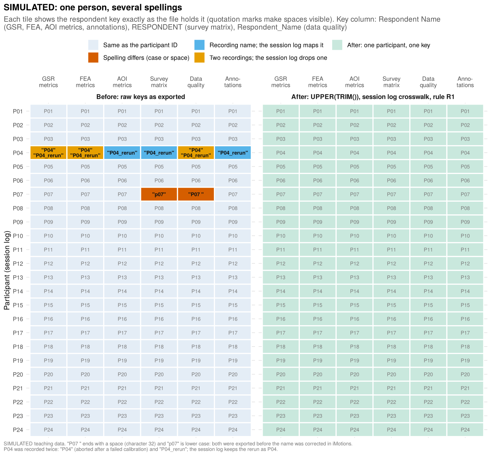
STEP 7 (section 07) fixes the keys: upper case, spaces trimmed, the session log as crosswalk, then rule R1. Cleaning log entry 3 records it: "Respondent name with a trailing space: "P07 "", action "Standardized with UPPER(TRIM()) to "P07"", 5 rows. Duplicates: STEP 8 then counts duplicated participant and stimulus pairs in every file, and each count is 0. Label alone is not unique in the R metrics files, because EndCard exists in Ad_A and in Ad_B; the stimulus key is Type + Label + Parent Stimulus.
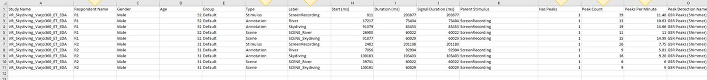
Ranges and missing values
Part 4 of the QA report compares every column with its codebook range: 0 values out of range (simulated). Defaults can still hide in the data. Try it: sort the GSR file by Age, or run STEP 9. P22 has Gender OTHER, Age 0, and Group Default (simulated), the values iMotions keeps when nobody types the details. STEP 9 sets gender and age to missing and recovers the order of the ads from the start times, which agree with the session log for all 24 (cleaning log entry 9). The Respondent Statistics Export shows everyone's details at once; the FEA Raw Data Statistics Export (AFFDEX Raw Data Statistics Export in the article) shows each facial marker's minimum and maximum, one row per marker, so reshape it before any join.
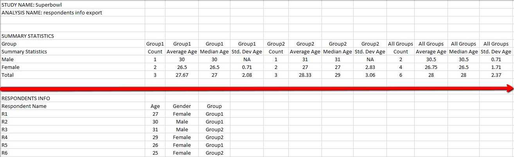
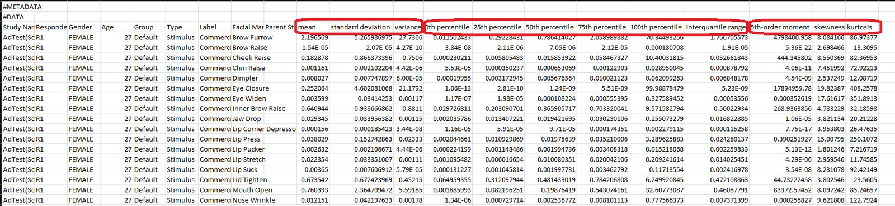
NA or 0. A missing value, written NA, must mean one thing per variable. When a participant never fixated the Logo there is no first fixation, so TTFF AOI (ms) stays NA; but no time was spent there, so fixation count and dwell time are 0 (STEP 13; cleaning log entry 14). The Logo was never fixated in 21 of 48 participant by ad rows (simulated); left as NA, their dwell times would drop out of every mean. That the export writes NA here is modeled; check a real file. Missing values also differ in reach: rule R2 removes a participant from every analysis, rule R3 one GSR value from one test (on missing data and how to handle them, see Schafer & Graham, 2002).
| Variable, long table (72 rows, simulated) | Missing | Why, from the codebook |
|---|---|---|
| logo_ttff_ms | 45 | NA = never fixated, or Baseline row |
| logo_fix_count | 24 | NA = Baseline row (0 = never fixated) |
| gsr_peaks_per_min | 1 | NA = GSR not valid (rule R3) |
| gender | 3 | NA = details not entered (iMotions default OTHER) |
Three clocks
Exports count time from three zero points. Sensor Data Timestamp is "Elapsed time since the recording started (in milliseconds)." R metrics Start (ms) is "relative to the start of the study," otherwise undefined; the simulation models it as the first slide's StartSlide event. Annotation times are "relative to stimulus onset." Try it: STEP 14 and STEP 15 compare them (simulated):
- The annotation export gives EndCard as 25,000 to 30,000 ms in all 48 rows, counted from the ad's onset.
- In the GSR metrics, EndCard's Start (ms) minus its ad's Start (ms) is 25,000 ms in every row.
- Sensor Data StartMedia minus GSR Start (ms) is constant within a participant (spread at most 0.7 ms) and differs between participants, from 18,429 to 28,064 ms: two zero points.
- The EndCard column of Sensor Data turns to 1 within one sample of StartMedia plus 25,000 ms (largest gap 6.7 ms).
Convert every time to one clock before comparing across files (cleaning log entries 17 and 18). Keeping devices on one clock is its own engineering problem; the lab's EEG arrives through the lab streaming layer for synchronized multimodal recording (Kothe et al., 2025). What "start of the study" means in Lab 11.1 is an item to verify: on a real export, STEP 15 shows an offset of 0 if it is the recording start.
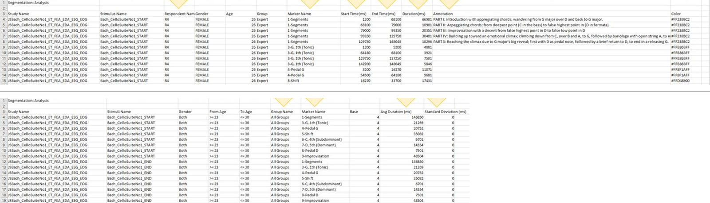
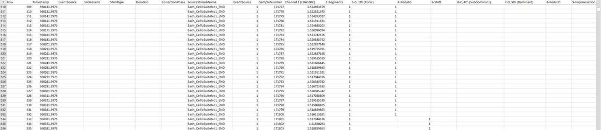
Consistency checks against the raw samples
Try it: STEP 15 recomputes two metrics from the Sensor Data of P01 to P06, between StartMedia and EndMedia of each ad: the share of eye tracker rows with Logo_gazed = 1, and of AFFDEX rows with Joy at or above 50. The Logo share differed from the exported Gaze Dwell time (%) by 0.03 percentage points on average (largest 0.28; r = .999 over 12 pairs), and Joy matched Percent of time present exactly (simulated). The small Logo gaps come from the export's 100 ms dwell threshold.
The wrong denominator. Devices are interleaved, not resampled: each row holds one device's sample. Counted over every row, the Logo share shrinks to 0.43 percent on average instead of 1.44 (simulated; gray circles in Figure 3), because GSR and AFFDEX rows carry no gaze. Divide by eye tracker rows only. Raw rows also show hardware trouble: P05's GSR rows stop about 8 s into Ad_B.
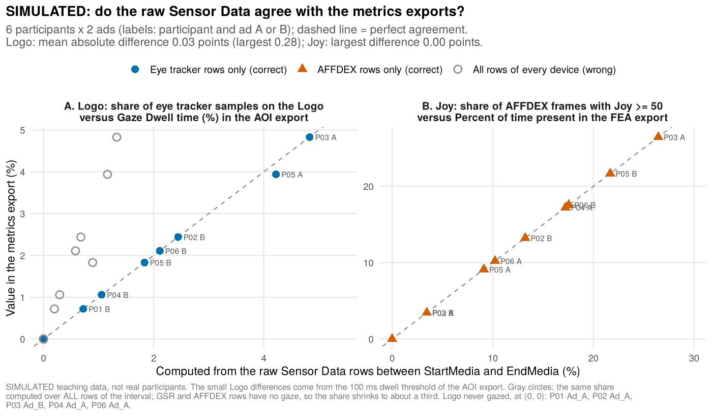
Aggregated files pass too: the Logo's Respondent ratio (%), recomputed from the individual AOI file, equals the aggregated export (54.2 and 58.3 percent), and the survey item means equal SurveyStatistics.txt (simulated). But both average every respondent before any exclusion, so neither can feed a test.
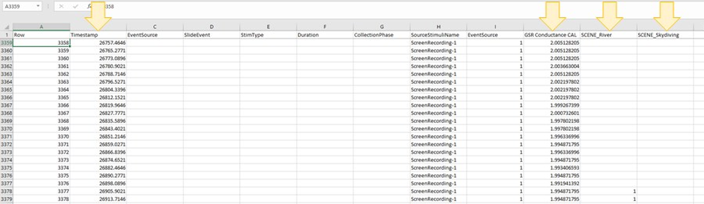
Data quality and the exclusion rule
Rule R2, written before collection, excludes a participant from all analyses when Eye tracking_Quality is below 90 percent or Affectiva AFFDEX_Quality below 80 percent on either ad (device names modeled). Try it: run STEP 16, or sort the data quality sheet. The lower of the two ads ranged from 77 to 96 percent for eye tracking and 65 to 98 percent for the face (simulated); the cleaning log records each decision:
| Entry | Participant | Problem (cleaning_log.csv, simulated) | Action | Basis |
|---|---|---|---|---|
| 19 | P18 | Data quality on the ads: eye tracking minimum 77 percent, face minimum 97 percent | Excluded from all analyses (eye tracking quality below 90 percent on an ad) | Rule R2, written before collection |
| 20 | P21 | Data quality on the ads: eye tracking minimum 94 percent, face minimum 65 percent | Excluded from all analyses (face found below 80 percent on an ad) | Rule R2, written before collection |
| 13 | P12 | Bluetooth gap: Signal Duration 91.3 percent of Duration | Kept (80 percent or more); Peaks Per Minute already uses Signal Duration | Rule R3 |
A rule also says whom to keep (simulated). The closest passes, P22 (93 and 96 percent) and P02 (94 and 97), stay; P18's Ad_A eye tracking value of exactly 90 percent is not below 90, so it is the 77 percent during Ad_B that excludes P18; and rule R3 keeps P12's 91.3 percent signal. Removing any of them would apply a rule nobody wrote. Joined on raw keys, P04 and P07 would get no quality values, and a quality filter silently drops such rows, keeping 20 participants instead of 22 (STEP 16), the kind of error studied in a survey of mistakes in data management (Kovacs et al., 2021).
Outliers: decide before you look
The General Data Analysis and Interpretation article describes one respondent at 5 GSR peaks per minute among others at 2 to 3, which "will significantly bias the mean." Removing a value after seeing it, though, is the undisclosed flexibility that allows presenting anything as significant (Simmons et al., 2011). This protocol wrote no outlier rule, so the strong responders stay (up to 26 peaks per minute during Ad_A; simulated), and a rank based test is the check (section 08). A future protocol can name a rule in advance, such as the absolute deviation around the median (Leys et al., 2013), preregistered (Leys et al., 2019); careless survey responses need their own rule (Meade & Craig, 2012).
Describing the checks in a methods section
Report the checks with numbers: how files were read, which keys failed and how they were fixed, the count after each exclusion with its reason, and the size of each consistency check (model paragraph in section 09). The QA report and the cleaning log go with the paper as supplementary materials.
Writing "the data were cleaned and outliers were removed": no rule, no count, no reason, so nobody can judge or repeat it.
Help center articles for this section: Export: Sensor Data, Export: R Processed GSR Files, Export: Annotations, Export: Data Quality Statistics, AOI Metrics, Export: R Processed Respondent Statistics, R Notebooks (FEA): AFFDEX Raw Data Statistics Export, Timestamping and synchronization method, and General Data Analysis and Interpretation. Manual PDFs on this site: Export: Sensor Data, Export: R Processed GSR Files, Annotations, Export: Data Quality Statistics, and Scene Editor (PDF).
Cleaning and merging
Opened correctly, the exports are still separate tables that cannot be analyzed together: their keys are named and sometimes spelled differently, some rows belong to recordings that must not be used, and some answers need scoring before they mean anything. This section turns them into two analysis ready tables with prepare_data.R. Every change is a line of code and a line in the cleaning log; nothing is typed into a file by hand. That is the advice of the data management literature: keep raw data untouched, script every step, and describe every variable (Wilson et al., 2017) (Ellis & Leek, 2018). Hand edits are where errors hide, and researchers report many data management mistakes of their own (Kovacs et al., 2021). STEPS 14 to 16, which check the clocks, the raw samples, and data quality, are explained in section 06; this section walks through the steps that change the data.
7.1 One person, one key (STEPS 2, 6, and 7)
Open cards 2 and 6 below, or run STEPS 2 and 6 yourself. Which participant has more than one recording, and which raw respondent keys do not match the session log, in which files?
What the pipeline found. Two keys fail the exact comparison: "p07" in the survey matrix (1 row) and "P07 " with a trailing space in the data quality file (5 rows); the character codes show the space as 32 (simulated). Both files were exported before the name was corrected in iMotions. A join on the raw keys would lose those rows without an error. And P04 was recorded twice: the first recording, P04, stopped after a failed calibration and is marked Use recording = No; the second is named P04_rerun.
What it did, and why this way. STEP 7 builds every key as UPPER(TRIM(raw)), the rule =UPPER(TRIM(A2)) in Excel, and looks it up in the session log, the operator's record of one row per recording. The log works as a crosswalk from recording names to participant codes: it maps P04_rerun to P04 and marks the aborted recording, which rule R1 removes (2 GSR rows, 6 FEA rows, and 2 data quality rows; simulated). A key still unmatched would stop the script. Cleaning log entry 2 reads: problem "Respondent name in lower case: "p07"", action "Standardized with UPPER(TRIM()) to "P07"", basis "Key rule UPPER(TRIM()); the standardized key matches the session log"; entry 7 records the rerun "Mapped to participant P04 through the session log". After STEP 7 every file holds the same 24 participants under one key, participant_id. Excel lookups ignore upper and lower case while R joins do not, so "p07" would join in Excel and fail in R; the trailing space fails in both.
7.2 Stimulus keys, and the rows set aside (STEP 8)
The stimulus is called Label in the metrics files, SourceStimuliName in Sensor Data, Stim_Name in the data quality file, Stimulus Name in the individual annotation file and the survey statistics, and Stimuli Name in the aggregate annotation file. STEP 8 renames each to stimulus and keeps the Type = Stimulus rows of Baseline, Ad_A, and Ad_B. Label alone is not unique, because the EndCard annotation exists in both ads; Type, Label, and Parent Stimulus together are. The Instructions, Questionnaire, and EndCard rows, 432 in all, are set aside, not deleted (cleaning log entry 8; simulated), and a duplicate check then finds 0 repeated keys in every file.
7.3 Details left at the defaults (STEP 9)
Card 9 prints the respondents whose details are the iMotions defaults. One participant, P22, has Gender OTHER, Age 0, and Group Default in every export (simulated). Age 0 is impossible, so it is a missing value, not an age, and gender is set to missing with it. The order of the ads is recovered from the data instead (AB when Ad_A has the smaller Start (ms)), and it agrees with the session log for all 24 participants. Entry 9 gives the basis: "Range check: Age 0 is impossible; Group must be AB or BA".
7.4 The survey: reshape, score, and recode (STEP 10)
The full survey response holds one row per participant with 16 columns in LABELID_ and LABELVALUE_ pairs. Tidy data have one row per observation and one column per variable (Wickham, 2014), so STEP 10 reshapes the matrix into 192 rows, 24 participants by 8 questions, and checks the item means against SurveyStatistics.txt (simulated). Two kinds of item then need scoring. The recall items store the chosen label (1 to 5), not correct or wrong, which is why iMotions reports a meaningless Recall_A "Average" of 2.42; they are scored against the answer key written before collection (Label1, ALTAVO, for Ad_A; Label2, BRENLOW, for Ad_B). ATT_3R, "Reusable water bottles are a waste of money", is a reverse worded item, so it is recoded as 8 minus the answer.
Cronbach's alpha describes how consistently the items of one scale move together: alpha = k / (k - 1) x (1 - sum of the item variances / variance of the sum). With k = 3 and the recoded item, the item variances are 1.5580, 0.7754, and 1.5362 (sum 3.8696) and the variance of the sum is 8.7826, so alpha = 1.5 x (1 - 3.8696 / 8.7826) = 0.839 (simulated). Without the recoding, alpha is -1.101, because the reverse worded item pulls against the other two. Entry 11 records both values.
7.5 GSR, FEA, and AOI values: one row per participant and stimulus (STEPS 11 to 13)
In card 11, which stimuli have less than 100 percent GSR signal, and which of them does rule R3 set to missing?
Two stimuli have gaps (simulated). P05's Shimmer stopped during Ad_B, leaving 7,812 of 30,000 ms of signal (26.0 percent), yet iMotions still reported 7.680 Peaks Per Minute, "computed on 7.8 s" (entry 12). Rule R3 sets that value to missing for GSR analyses only, and P05 stays in every other test. P12's Baseline had a 5.2 s gap and kept 91.3 percent of its signal, so it stays: entry 13 logs it with 0 rows affected, the record that the rule was applied rather than forgotten. STEP 12 spreads the FEA file, one row per expression, into joy_pct, engagement_pct, and browfurrow_pct (216 rows become 72). STEP 13 makes logo_fixated, 1 when a first fixation on the Logo exists; for the 21 of 48 Logo rows never fixated, counts and dwell times become 0 while the time to first fixation stays NA (entry 14; section 06 explains NA versus 0).
7.6 The join (STEP 17)
A join combines two tables by matching their key columns. STEP 17 starts from a spine, the full grid of 24 participants by 3 stimuli (72 rows), and adds each table with a left join, which keeps every spine row, by participant_id and stimulus. After each join it counts the rows: a join that adds rows has found a duplicated key, and one that leaves NA where data should be has found a mismatch. Every join keeps 72 rows, and the ad rows have no missing values (simulated). The results are the long table, analysis_ready_long.csv, 72 rows by 29 columns, one row per participant and stimulus, and the wide table, analysis_ready_wide.csv, 24 rows by 34 columns, one row per participant. The column include marks the analysis sample after rule R2 (22 participants and 66 rows, 65 for GSR analyses), so nobody is deleted and every exclusion stays visible. Section 08 shows the merged data set at a glance (Figure 4).
7.7 The codebook, the cleaning log, and the QA report (STEP 18)
STEP 18 writes the documentation with the same code that made the data. The codebook, codebook.csv with 57 rows, gives each variable a label, source file, source column, type, units, allowed range, and what a missing value means; logo_ttff_ms, for example, reads "NA = never fixated, or Baseline row". A shareable data set needs exactly this (Buchanan et al., 2021), and R packages such as codebook can draft one automatically (Arslan, 2019). The cleaning log, cleaning_log.csv with 20 entries, holds every decision in the order it was made. The QA report, qa_report.txt, gathers the counts, the key audit, the ranges and missing values against the codebook (0 values out of range, 0 duplicated keys), the consistency checks, and the exclusions (simulated). Four of the 20 log entries, which also name the file and the recording:
| Entry | Step | Participant, stimulus | Problem (cleaning_log.csv, simulated) | Action | Rows | Basis |
|---|---|---|---|---|---|---|
| 3 | 7 | P07, all | Respondent name with a trailing space: "P07 " | Standardized with UPPER(TRIM()) to "P07" | 5 | Key rule UPPER(TRIM()); the standardized key matches the session log |
| 7 | 7 | P04, all | Rerun saved under another respondent name (P04_rerun) | Mapped to participant P04 through the session log | 42 | Session log: use recording 2 as P04 |
| 12 | 11 | P05, Ad_B | Shimmer dropout: Signal Duration 7812 of 30000 ms (26.0 percent); Peaks Per Minute 7.680 computed on 7.8 s | GSR values set to missing for this stimulus (GSR analyses only); participant kept in all other analyses | 1 | Rule R3; session log note (low battery) |
| 13 | 11 | P12, Baseline | Bluetooth gap: Signal Duration 91.3 percent of Duration | Kept (80 percent or more); Peaks Per Minute already uses Signal Duration | 0 | Rule R3 |
7.8 The script, line by line
Code from prepare_data.R, which uses readr, dplyr, tidyr, purrr, and stringr from the tidyverse (Wickham et al., 2019), one card per STEP, with its output of October 11, 2026 (prepare_output.txt). STEP 0 is split into two cards; the color palette, the figure theme, and STEP 19, which draws the figures of section 06, are left out. The outputs are analysis_ready_long.csv, analysis_ready_wide.csv, codebook.csv, cleaning_log.csv, and qa_report.txt.
7.9 The Excel route
Without R, use SIMULATED_data_prep.xlsx and excel_walkthrough.md, sections 2 to 4, 6, and 8, after importing the files as in section 05. The order is the same as in R: the SessionLog sheet becomes the key table; the Keys sheet makes problem keys visible with LEN, CODE, and EXACT; each imported sheet gets a clean key and the participant in helper columns (GSR_Import and DataQuality also get Use recording); one lookup key per row joins the tables on the Merged sheet (participant, Type, Label, and Parent Stimulus for GSR rows); and the Check sheet compares each result with R.
| Result | Cell | Formula | Simulated value |
|---|---|---|---|
| Key of the first recording | SessionLog!N2 | =UPPER(TRIM(B2)) | P01 |
| Number of characters of "P07 " | Keys!C4 | =LEN(B4) | 4 |
| Code of the last character (32 = space) | Keys!D4 | =CODE(RIGHT(B4,1)) | 32 |
| Case sensitive match in the session log | Keys!E4 | =SUMPRODUCT(--EXACT(B4,SessionLog!$B$2:$B$26))>0 | FALSE |
| Participant from the session log | Keys!H4 | =IFERROR(INDEX(SessionLog!$A$2:$A$26,MATCH(G4,SessionLog!$N$2:$N$26,0)),"NOT FOUND") | P07 |
| Lookup key of a GSR row (DROP for the aborted recording) | GSR_Import!S2 | =IF(R2="Yes",Q2&"|"&F2&"|"&G2&"|"&K2,"DROP") | per row |
| Lookup key of a data quality row | DataQuality!L2 | =IF(K2="Yes",J2&"|"&B2,"DROP") | per row |
| GSR lookup key on the Merged sheet | Merged!C2 | =A2&"|Stimulus|"&B2&"|"&B2 | per row |
| GSR Peaks Per Minute, P01 Ad_A | Merged!D3 | =INDEX(GSR_Import!$N$2:$N$171,MATCH(C3,GSR_Import!$S$2:$S$171,0)) | 6 |
| include (rule R2) | Merged!L2 | =IF(AND(J2>=90,K2>=80),1,0) | per participant |
| Recall_A correct (Label1 = ALTAVO) | Survey!X2 | =IF(K2=1,1,0) | per participant |
| ATT_3R reverse coded | Survey!Z2 | =8-S2 | per participant |
| Cronbach's alpha, ATT_3R recoded | Survey!AF2 | =3/2*(1-(VAR.S(O2:O25)+VAR.S(Q2:Q25)+VAR.S(Z2:Z25))/VAR.S(AB2:AB25)) | 0.839 |
| Cronbach's alpha, ATT_3R not recoded (the mistake) | Survey!AF3 | =3/2*(1-(VAR.S(O2:O25)+VAR.S(Q2:Q25)+VAR.S(S2:S25))/VAR.S(AC2:AC25)) | -1.101 |
| Rows (participant x stimulus) | Merged!Q3 | =COUNTA(A2:A73) | 72 |
| Lookups that failed (#N/A) | Merged!Q4 | =SUMPRODUCT(--ISNA(D2:D73))+SUMPRODUCT(--ISNA(H2:H73))+SUMPRODUCT(--ISNA(I2:I73)) | 0 |
| Participants with include = 1 | Merged!Q5 | =COUNTIFS(B2:B73,"Baseline",L2:L73,1) | 22 |
| Stimulus rows with GSR not valid | Merged!Q6 | =COUNTIF(E2:E73,0) | 1 |
You should see "NOT FOUND" nowhere, "DROP" in exactly 2 rows of GSR_Import and 2 of DataQuality (the Instructions and Baseline rows of the aborted recording), 0 failed lookups (simulated), and 0 in Check!B57, which counts the rows whose status is CHECK. In Excel 365 or 2021 each INDEX and MATCH pair can be an XLOOKUP, for example =XLOOKUP(P2,SessionLog!$N$2:$N$26,SessionLog!$A$2:$A$26,"NOT FOUND"). Common mistake. Building DataQuality!L2 from the raw name in column A instead of the participant in column J; try it once in a copy, and P07 and P04 return #N/A, which a filter on quality would quietly drop. Keep every step a formula: a cell typed over by hand leaves no trace, and spreadsheet errors are common (Panko, 1998); and keep the raw exports untouched, because spreadsheet programs can change values as they open them (Ziemann et al., 2016). The pivot table and the H3 test on the Merged sheet follow in section 08.
Help center articles for this section: Export: R Processed GSR Files, Export: Survey data, AOI Metrics, Annotations, Data Collection Overview, and Opening Data Export Files in Excel. Manual PDFs on this site: Introduction to Databasing, Data Handling, Export: R Processed GSR Files, Export: Survey data, AOI Metrics, and Annotations (PDF).
Testing the hypotheses: three tests that each need merged data
This section runs the three planned tests on the analysis ready files with analysis.R (output in analysis_output.txt), and H3 also in Excel. Every statistic is simulated and matches that output exactly. The statistics stay at the level of a first course; Workshop 8 (analysis and reporting) goes further. None of the three tests could run on one export alone:
| Hypothesis | Measures and their exports | Unit | Test |
|---|---|---|---|
| H1: brand recall is more likely when the Logo was fixated | Logo fixated (AOI Metrics Export) and brand recalled (survey matrix) | participant by ad | Fisher's exact test and odds ratio; per ad tests and a mixed logistic model as checks |
| H2: more Joy goes with more liking | Joy, percent of time (FEA Metrics Export) and liking (survey matrix) | participant by ad | Linear mixed model with a random intercept per participant |
| H3: GSR Peaks Per Minute are higher during each ad than during Baseline | Peaks Per Minute (GSR Peak Metrics), with rules R2 and R3 from the data quality file, the GSR file, and the session log | participant by stimulus | Paired t test with dz, Wilcoxon check, Holm adjustment |
Read, check, and define the sample
STEP 1 reads the long table (72 rows, 29 columns), the wide table (24 rows, 34 columns), and the codebook (57 variables), and stops unless every column is in the codebook and each participant and stimulus pair is unique (simulated). STEP 2 keeps the analysis sample, include = 1: 22 of 24 participants (P18 and P21 excluded by rule R2), 11 in each order, 12 women, 9 men, 1 not recorded, age M = 21.33 years (SD = 1.88, n = 21). That is 66 rows, 44 of them ad rows, and 65 with valid GSR (P05's Ad_B value is missing under rule R3). STEP 3 describes them before any test:
| Measure, M (SD), STEP 3 (simulated) | Baseline | Ad_A | Ad_B |
|---|---|---|---|
| GSR Peaks Per Minute | 2.06 (1.86) | 7.27 (6.80) | 6.00 (4.94), n = 21 |
| Joy, percent of time | 0.38 (1.42) | 12.13 (10.81) | 8.33 (9.46) |
| Liking, 1 to 7 | 4.59 (1.40) | 4.05 (1.29) | |
| Logo fixated, proportion | .55 | .55 | |
| Brand recalled, proportion | .55 | .55 |
![Six panels: A, GSR peaks per minute for Baseline, Ad_A, and Ad_B with one gray line per participant and diamonds for the means; B, box plots of Joy percent of time, near 0 at Baseline; C, percent recalled by Logo fixation, 3 of 10 and 4 of 10 when not fixated against 9 of 12 and 8 of 12 when fixated, with 95 percent intervals; D, liking against Joy with two mixed model lines; E, face found against eye tracking quality for all 24, with P18 and P21 in the shaded areas that fail rule R2; F, purchase intention against attitude](../assets/ws7/data-figures/SIMULATED_fig4_merged_overview.png)
H1: Logo fixation and brand recall
Two yes or no variables make a 2 x 2 table. The odds of recall are the number who recalled divided by the number who did not. The odds ratio divides the odds when the Logo was fixated by the odds when it was not, so 1 means no association. Fisher's exact test computes exactly how likely a table at least this lopsided would be if fixation and recall were unrelated, which suits small counts.
Sample odds ratio = (17 x 13) / (7 x 7) = 4.51; Fisher's conditional estimate, OR = 4.34.
Pooled over both ads, the brand was recalled in 17 of 24 observations with a Logo fixation (70.8%) and in 7 of 20 without one (35.0%), OR = 4.34, 95% CI [1.08, 19.55], Fisher's exact p = .032 (simulated). The chi square test agrees, χ²(1, N = 44) = 5.65, p = .017, φ = .36. The wide interval allows an odds ratio barely above 1 or one near 20.
The 44 observations come from 22 people, two each, so they are not independent, and the plan named two checks (simulated). Each ad alone points the same way, with intervals that include 1: Ad_A OR = 6.31, 95% CI [0.80, 68.43], p = .084; Ad_B OR = 2.85, 95% CI [0.39, 24.13], p = .391. A mixed logistic regression, which predicts a yes or no outcome, gave each participant a random intercept, a personal starting level of recall: OR = 4.51, 95% CI [1.26, 16.10], z = 2.32, p = .020. H1 was supported, with the caution that the pooled observations are not fully independent and the interval is wide.
The model estimated the spread of the personal starting levels at 0.000 (simulated), and lme4 flagged the fit as singular: a variance estimated at exactly zero. This sample showed no extra similarity between the two answers of one person, so the model reduced to an ordinary logistic regression. That is not a software error, and it does not prove that people are alike: 22 people with two yes or no answers each carry little information about that spread. Report the flag, and read the model as a check on the pooled test.
H2: Joy and liking
Each participant rated both ads, and some people like everything more than others. A linear mixed model gives each participant a random intercept, so the Joy slope asks: for the same kind of person, how much higher is liking when an ad drew 10 more percentage points of Joy? The ad is in the model too, so a difference between the ads is not mistaken for Joy. The intraclass correlation (ICC) is the share of the variance in liking that lies between people.
Simulated: b1 = 0.32, SE = 0.20, t(40.66) = 1.63, p = .110; ICC = .37.
Joy covered 12.13 percent of Ad_A (SD = 10.81) and 8.33 percent of Ad_B (SD = 9.46), with no Joy in 11 of the 44 observations; liking averaged 4.59 and 4.05 (simulated). Liking was 0.32 points higher per 10 percentage points of Joy, 95% CI [-0.06, 0.71], t(40.66) = 1.63, p = .110, with fractional degrees of freedom from the Satterthwaite approximation; the standardized slope was 0.24. Thirty-seven percent of the variance in liking lay between participants (ICC = .37), which is why the model needs the random intercept. Within each ad the correlations were positive and not significant: Ad_A r(20) = .27, 95% CI [-.18, .62], p = .232; Ad_B r(20) = .18, 95% CI [-.26, .56], p = .424.
H2 was not supported, which is not evidence of no relation: the interval runs from slightly negative to moderate, and 22 participants cannot tell a small positive relation from none. The model follows lme4 (Bates et al., 2015); with two ads as a fixed factor it describes these two ads, and ads in general would need several ads as a random factor (Judd et al., 2012).
H3: GSR peaks during each ad against Baseline
Every participant has a Baseline value and an ad value, so the test works on each person's difference (ad minus Baseline). A paired t test asks whether the mean difference is far from zero relative to how much the differences vary, and dz, the mean difference divided by the SD of the differences, is its effect size (Lakens, 2013). Two ads mean two tests, so the Holm correction multiplies the smaller p by 2 and the larger by 1, never letting the second fall below the first.
Simulated, Ad_A: Md = 5.21, SDd = 6.31, n = 22, so t(21) = 3.87 and dz = 0.83.
Peaks were more frequent during Ad_A (M = 7.27 peaks per minute, SD = 6.80) than during Baseline (M = 2.06, SD = 1.86), mean difference 5.21, 95% CI [2.41, 8.01], t(21) = 3.87, p < .001, dz = 0.83, 95% CI [0.33, 1.30]; 19 of 22 participants increased (simulated). For the 21 participants with valid GSR during Ad_B: M = 6.00 (SD = 4.94) against 1.88 (SD = 1.68), mean difference 4.12, 95% CI [2.15, 6.10], t(20) = 4.35, p < .001, dz = 0.95, 95% CI [0.42, 1.46]; 16 of 21 increased. Holm adjusted p values were .00088 and .00062, both p < .001. The dz intervals are exact (noncentral t); Excel's approximation gives [0.34, 1.31] and [0.43, 1.46]. P05 is missing from the Ad_B test only. H3 was supported for both ads.
Assumption checks, and why the rank test comes along
A paired t test assumes roughly normal differences. The Ad_A differences were skewed by a few strong responders, Shapiro Wilk W = 0.862, p = .006, while Ad_B showed no clear departure, W = 0.921, p = .092 (simulated); in the normal Q-Q plots the strong responders leave the line at the top right. No outlier rule was written, so they stay, and the planned Wilcoxon signed rank test, which ranks the differences instead of using their size, is the check. It agreed (Ad_A V = 212, Ad_B V = 165, both p < .001). The H2 residuals show no funnel or curve. H1 needs no normal distribution; its smallest expected counts (9.09 pooled, 4.55 per ad) are why Fisher's exact test is reported.
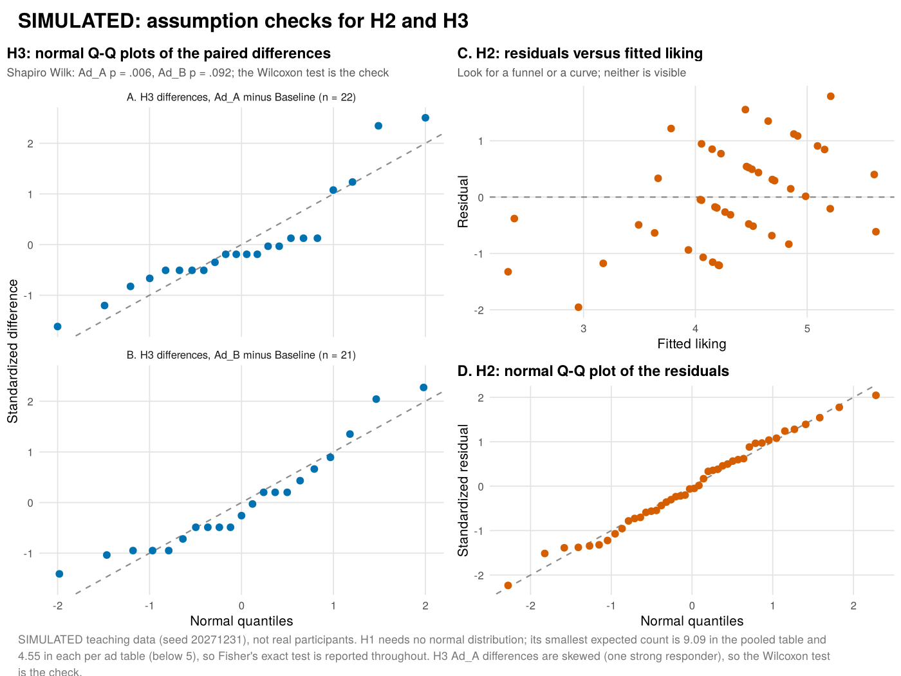
The script, line by line
Code from analysis.R, in order (the color palette and figure theme of STEP 0 and the figure code of STEP 8 are left out), with its output of October 11, 2026.
The Excel route
Without R, use SIMULATED_data_prep.xlsx and excel_walkthrough.md, which carry the cleaning of section 07 through to H3. Summarize the Merged sheet with a pivot table, as the Creating Excel Pivot Tables article shows: click a cell of the data, Insert > PivotTable > New Worksheet > OK, drag stimulus to Rows and GSR Peaks Per Minute (analysis) to Values, right click the value, Value Field Settings, change Sum to Average, OK; then drag include (R2) to Filters and keep only 1.
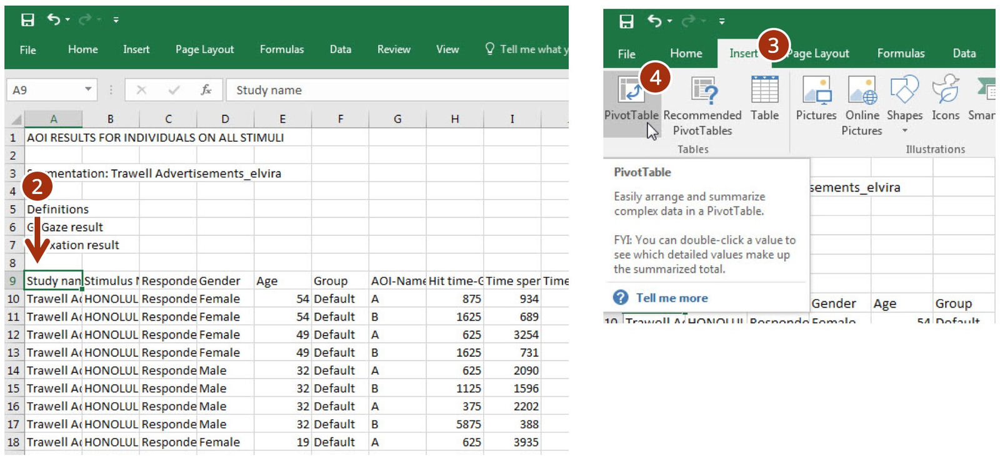
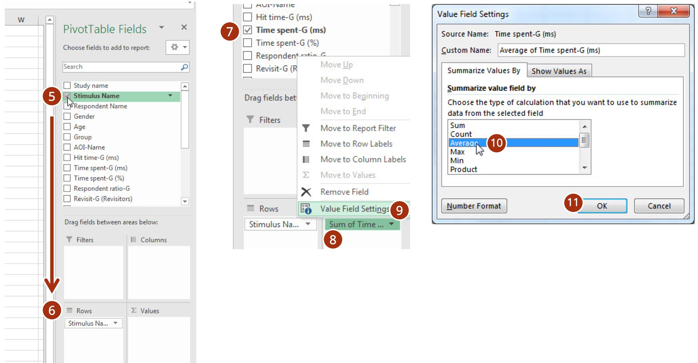
The default Sum adds the participants' values together; switch to Average, and use Count to check n. The Pivot sheet rebuilds the PivotTable with AVERAGEIFS and COUNTIFS so it can be checked cell by cell, and the H3 sheet runs the paired test (simulated):
| Quantity | Cell | Formula | Simulated result |
|---|---|---|---|
| Mean GSR Peaks Per Minute, Baseline | Pivot!C4 | =AVERAGEIFS(Merged!$D$2:$D$73,Merged!$B$2:$B$73,A4,Merged!$L$2:$L$73,1,Merged!$E$2:$E$73,1) | 2.063 |
| n (GSR), Ad_B | Pivot!B6 | =COUNTIFS(Merged!$B$2:$B$73,A6,Merged!$L$2:$L$73,1,Merged!$E$2:$E$73,1) | 21 |
| Baseline, first participant | H3!B5 | =INDEX(Merged!$F$2:$F$73,MATCH(A5&"|Stimulus|Baseline|Baseline",Merged!$C$2:$C$73,0)) | per participant |
| Difference | H3!D5 | =C5-B5 | per participant |
| Mean difference, Ad_A | H3!B35 | =AVERAGE(D5:D26) | 5.210 |
| SD of the differences | H3!B36 | =STDEV.S(D5:D26) | 6.308 |
| t | H3!B38 | =B35/B37 | 3.874 |
| p (T.TEST, paired) | H3!B40 | =T.TEST(C5:C26,B5:B26,2,1) | 0.00088 |
| Cohen's dz | H3!B45 | =B35/B36 | 0.826 |
| dz CI lower and upper (approx.) | H3!B47, H3!B48 | =B45-1.96*B46, =B45+1.96*B46 | 0.342, 1.310 |
| p (T.TEST, paired), Ad_B | H3!H39 | =T.TEST(I5:I25,H5:H25,2,1) | 0.00031 |
| Cohen's dz, Ad_B | H3!H44 | =H34/H35 | 0.949 |
T.TEST returns only p; its arguments are range 1, range 2, tails = 2, and type = 1 for paired. The hand computed t must give the same p through T.DIST.2T, a check that the ranges line up row by row. Excel has no function for the Wilcoxon test, the exact dz intervals, or Holm, and H1 and H2 are R only. The Check sheet sets every Excel result beside R's; Check!B57 counts rows marked CHECK and must read 0.
Help center articles for this section: Creating Excel Pivot Tables, Opening Data Export Files in Excel, General Data Analysis and Interpretation, AOI Metrics, R Notebook (FEA): Facial expression analysis thresholding and aggregation, and Export: R Processed GSR Files. Manual PDFs on this site: Making Excel Pivot Tables and General Data Analysis and Interpretation (PDF).
Writing the methods and results: the data preparation paragraph, the participant flow, and APA results
Data preparation belongs in the methods, where a reader must be able to repeat how the exports became the analysis sample; the results then report what was found, in the planned order. The journal article reporting standards for quantitative research (Appelbaum et al., 2018) lead you to report the flow of participants with every exclusion and its reason and, for each hypothesis, a test with an effect size and its interval. Every statistic here is simulated; the form is the lesson.
What the data preparation paragraph must say
- Exports, software, and rules. The iMotions version, the export families and files, the session log, and rules R1 to R3 with the date they were written.
- Reading and keys. How the header row was found, every key mismatch, its fix, and the rows it touched.
- Scoring. The recall answer key, reverse coding, and Cronbach's alpha.
- Consistency checks. What was recomputed from raw data, for whom, and how close it came.
- Exclusions and the sample. Each exclusion with its rule and reason, and the sample of each analysis.
- Records. The codebook, the cleaning log, and the QA report as supplementary materials.
A model data preparation paragraph (simulated)
Condensed from section (a) of results_text.md, which also describes the study and the analysis plan.
All files were read with R 4.3.3 (readr, dplyr, tidyr) as text, from the header row found by rule and without trimming spaces, so that every key could be inspected before it was changed. Two respondent keys did not match the session log character for character: "p07" in the survey matrix (1 row) and "P07 " with a trailing space in the data quality file (5 rows); both had been exported before the name was corrected in iMotions. Keys were standardized (spaces trimmed, upper case) and mapped to participant codes through the session log, which listed 25 recordings for 24 participants; rule R1 removed the aborted first recording of P04 (2 rows of the GSR file, 6 rows of the FEA file, 2 rows of the data quality file, and one Sensor Data file). The survey matrix was reshaped into 192 answers, the recall items were scored against the answer key, and the reverse worded attitude item was recoded (Cronbach's alpha = .84; -1.10 without recoding). The raw Sensor Data of six participants reproduced the exported Logo dwell percent (mean absolute difference 0.03 percentage points, r = .999) and Joy percent of time (largest difference 0.00 percentage points), and times were compared only after conversion to one clock. Rule R2 excluded two participants (P18, eye tracking quality 77 percent during Ad_B; P21, face found in 66 and 65 percent of frames during the ads), leaving 22 (12 women, 9 men, 1 not recorded; age M = 21.33 years, SD = 1.88, n = 21; 11 in each order). Rule R3 set one GSR value to missing (P05, Ad_B: 26.0 percent of the signal). Every decision was written to a cleaning log (20 entries) and each variable to a codebook (Broman & Woo, 2018; Wickham, 2014; Wilson et al., 2017); both, with the quality assurance report, are available as supplementary materials.
A model participant flow
One sentence and one table carry the participant flow (simulated): of 25 recordings of 24 participants, one aborted recording was removed under rule R1 and two participants were excluded under rule R2, leaving 22; rule R3 set one GSR value to missing, so the Ad_B test of H3 used 21 participants.
| Table 1 (simulated). Participant flow from the recordings to each analysis | Participants | Rows | Reason |
|---|---|---|---|
| Recordings in the session log | 24 (25 recordings) | 170 GSR rows | P04 recorded twice |
| After rule R1 (Use recording = No) | 24 | 168 | P04's aborted first recording removed |
| Merged table of the analysis stimuli (Baseline, Ad_A, Ad_B) | 24 | 72 | No rows gained or lost in the joins |
| After rule R2 (data quality on the ads): analysis sample | 22 | 66 | P18 (eye tracking 77 percent), P21 (face 65 percent) |
| GSR analyses after rule R3 (signal below 80 percent) | 22 | 65 | P05 Ad_B missing; H3 Ad_B test n = 21 |
Note. SIMULATED teaching data. Counts from part 1 of qa_report.txt. Rows are GSR file rows through rule R1, then participant by stimulus rows. Rule R2 applies to every analysis; rule R3 to GSR analyses only.
APA results
APA style gives the statistic with its degrees of freedom (simulated values here), χ²(1, N = 44) = 5.65 or t(40.66) = 1.63; then p; then the effect size with its interval. Give exact p to three decimals (p = .032) and p < .001 below that, never p = .000, even when the output prints 0.00088. Drop the leading zero for values that cannot exceed 1 (p, r = .27, φ = .36, ICC = .37, proportions) and keep it for those that can (OR = 4.34, b = 0.32, dz = 0.83). Name the unit: peaks per minute, percentage points, scale points. Report a nonsignificant test with its interval as "not supported," never as "no effect" or "a trend." The models below are section (b) of results_text.md, with d_z set as dz.
Participants fixated the Logo in 12 of 22 cases for each ad and recalled the advertised brand in 12 of 22 cases for each ad. Pooled over the two ads, the brand was recalled in 17 of 24 observations in which the Logo had been fixated (70.8%) and in 7 of 20 observations in which it had not (35.0%), OR = 4.34, 95% CI [1.08, 19.55], Fisher's exact p = .032; χ²(1, N = 44) = 5.65, p = .017, φ = .36. The association had the same direction for each ad separately, with wide intervals that included 1 (Ad_A: OR = 6.31, 95% CI [0.80, 68.43], p = .084; Ad_B: OR = 2.85, 95% CI [0.39, 24.13], p = .391). A mixed logistic regression with a random intercept per participant gave OR = 4.51, 95% CI [1.26, 16.10], z = 2.32, p = .020; the participant variance was estimated at zero (a singular fit), so the model reduced to an ordinary logistic regression. H1 was supported, with the caution that the pooled observations are not fully independent and the interval is wide.
Participants showed Joy during 12.13 percent of Ad_A (SD = 10.81) and 8.33 percent of Ad_B (SD = 9.46), with no Joy in 11 of the 44 participant by ad observations; mean liking was 4.59 (SD = 1.40) for Ad_A and 4.05 (SD = 1.29) for Ad_B. In the mixed model, liking was 0.32 points higher for every 10 percentage points of Joy, SE = 0.20, 95% CI [-0.06, 0.71], t(40.66) = 1.63, p = .110; the standardized slope was 0.24, and 37 percent of the variance in liking lay between participants (intraclass correlation = .37). The correlations for each ad were small to moderate and not significant (Ad_A: r(20) = .27, 95% CI [-.18, .62], p = .232, Spearman ρ = .33; Ad_B: r(20) = .18, 95% CI [-.26, .56], p = .424, Spearman ρ = .14). H2 was not supported at alpha = .05; the estimate was positive, but a sample of 22 participants cannot distinguish a small positive relation from none.
GSR peaks were more frequent during Ad_A (M = 7.27 peaks per minute, SD = 6.80) than during Baseline (M = 2.06, SD = 1.86), mean difference = 5.21, 95% CI [2.41, 8.01], t(21) = 3.87, p < .001, dz = 0.83, 95% CI [0.33, 1.30]; 19 of 22 participants increased. Among the 21 participants with valid GSR during Ad_B, peaks were more frequent during Ad_B (M = 6.00, SD = 4.94) than during Baseline (M = 1.88, SD = 1.68), mean difference = 4.12, 95% CI [2.15, 6.10], t(20) = 4.35, p < .001, dz = 0.95, 95% CI [0.42, 1.46]; 16 of 21 increased. Both effects remained significant after Holm's adjustment (both adjusted p < .001). The differences for Ad_A were skewed by a few strong responders (Shapiro Wilk W = 0.862, p = .006), and the Wilcoxon signed rank tests agreed with the t tests (Ad_A: V = 212, p < .001; Ad_B: V = 165, p < .001). H3 was supported for both ads.
Citing the codebook and the cleaning log
Name the records and where to find them: "The codebook, cleaning log, and quality assurance report are available as supplementary materials (codebook.csv, cleaning_log.csv, qa_report.txt)." A codebook is a data dictionary; see getting started creating data dictionaries (Buchanan et al., 2021), documenting data with the codebook package (Arslan, 2019), and how to share data for collaboration (Ellis & Leek, 2018). Share the scripts and their output files too.
The client version
A client wants what the merged data show in plain words, without test statistics or claims the design cannot carry. Two traps wait. H1 is an association: nobody controlled where viewers looked, so it cannot show that looking at the logo caused recall. And the iMotions screens a client may have seen average every respondent before any exclusion and test nothing.
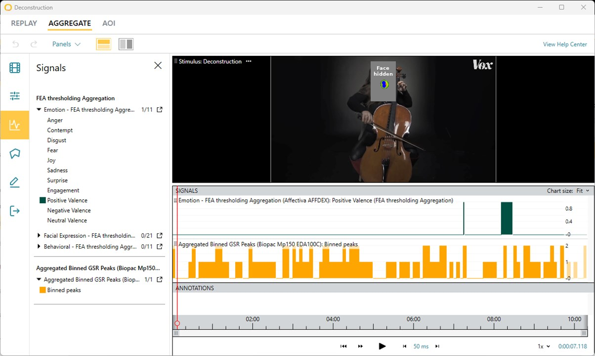

Viewers who looked at the logo named the brand more often afterward: in 17 of 24 cases, against 7 of 20 among viewers who did not. That is an association; the study did not control where people looked, so it cannot say that looking caused remembering. Skin conductance responses, a sign of physiological arousal rather than of liking, came more often during both ads than during a gray screen (about 7 and 6 per minute, against about 2). Whether viewers who showed more Joy also liked the ad more could not be settled with 22 people. Two of 24 viewers were set aside before the analysis because the eye tracker or the face camera did not record them well enough. These are simulated data for teaching.
Help center articles for this section: Creating Excel Pivot Tables, Aggregate Replay, Replay and Analysis Windows, and Export: Survey data. Manual PDFs on this site: Making Excel Pivot Tables and Replay and Analysis Windows (PDF).
Discussion, sharing, and storage: what preparation can fix, what may be shared, and how data survive
The discussion of a data preparation write up answers three questions: what the preparation taught, what it could not repair, and what happens to the data next, meaning who may see them, where they are kept, and for how long. Every number below is simulated.
What the measures mean, and what they do not
One caution first, for every result in section 08. GSR peaks count moments of physiological arousal, not liking; Joy is the share of time a face showed an expression, not a feeling; a fixation on the Logo shows where the eyes rested, not what was understood. The General Data Analysis and Interpretation article warns against reverse inference: "if a brain region is activated, we cannot infer the presence of a cognitive process." The same holds for skin and face signals.

What data preparation can and cannot fix
None of the three tests was possible with one export alone: H1 joined the AOI export to the survey, H2 the FEA export to the survey, and H3 needed the data quality file and the session log to decide which GSR values to trust. The joins failed first on things that no statistics course mentions. A respondent name typed with a trailing space, or retyped in lower case, survived in every file exported before the correction; Excel lookups ignore case and would have hidden one of the two problems, while a join on raw keys followed by a quality filter would have dropped two participants without a warning (Kovacs et al., 2021). A participant recorded twice could be resolved only because the operator wrote down which recording to use, which makes the session log the key table of the study. Files were never edited by hand: every change is a line of code and a line in the cleaning log, so the whole path from exports to results can be repeated (Broman & Woo, 2018; Wilson et al., 2017). A copy that a student had opened and saved again in Excel held the same numbers, but spreadsheet programs can also turn codes into dates without a warning (Ziemann et al., 2016), so analysis read only the raw exports.
Preparation makes every decision visible and repeatable; it cannot create data that were never recorded. No step brings back the 22.2 s of GSR signal that P05 lost when the Shimmer battery failed (simulated), a face the camera did not find, or a calibration that failed; the pipeline can only remove such data by a written rule, count them, and log them. P04's data exist because the operator stopped, recalibrated, recorded again, and wrote it down. Nor can cleaning fix a modeled column name that turns out to be wrong, a sample too small to answer H2, or two ads that cannot stand for ads in general (Judd et al., 2012).
Rules first: analytic flexibility and the garden of forking paths
Every step of section 07 held a choice: the quality thresholds, whether a signal at 91.3 percent counts, whether to pool the two ads, what to do with 26 peaks per minute (simulated). When choices are made after seeing the data, the result is one path picked from many, the garden of forking paths. Left undisclosed, such analytic flexibility allows presenting anything as significant (Simmons et al., 2011). One remedy is to write the rules before collection and preregister them, the subject of the preregistration revolution (Nosek et al., 2018) and of a manifesto for reproducible science (Munafò et al., 2017); here the protocol dated 2026-11-09 fixed R1 to R3, the recall answer key, and the attitude scoring. Where a choice stays open, a multiverse analysis reruns the analysis under every reasonable combination of choices (Steegen et al., 2016). No outlier rule was named, so nothing was removed and the rank test served as the check.
Reproducibility: same data, same code, same numbers
A result is reproducible when another person, given the same data and code, gets the same numbers; see reproducible research in computational science (Peng, 2011), ten simple rules for reproducible computational research (Sandve et al., 2013), a practical guide for transparency in psychological science (Klein et al., 2018), and an evaluation of data availability and analytic reproducibility under a mandatory open data policy (Hardwicke et al., 2018). The worked example is built for it: every file carries its seed (20271231) in its first line, four commands run in order rebuild every file (README.md, section 2), and the Check sheet of the workbook holds 52 checks of the Excel results against R. Rerun prepare_data.R and analysis.R yourself and compare your output with the posted files.
Sharing data, and the limits privacy sets
Shared data are useful when they follow the FAIR principles (findable, accessible, interoperable, reusable), the FAIR Guiding Principles for scientific data management and stewardship (Wilkinson et al., 2016); a 2019 addendum moved their living document to go-fair.org/fair-principles, so use that address. The tables, codebook, cleaning log, QA report, and scripts make a shared data set reusable; see practical tips for ethical data sharing (Meyer, 2018).
Biometric data limit what may leave the lab. A face video identifies a person, which is why face recordings stay inside the lab (for what sharing recordings and other materials involves, see Gilmore et al., 2018), and gaze data carry privacy implications of their own (Kröger et al., 2020). Removing names is not enough when a few details single a person out (Rocher et al., 2019); in a study of 24 people, a session date and start time may allow re-identification. When the consent form and the IRB protocol allow sharing at all, the lab's practice is:
| May be shared, de-identified | Stays inside the lab |
|---|---|
| The analysis ready tables with codes such as P01 | Respondent camera recordings and any image of a face |
| The codebook, the cleaning log, and the QA report | The key that links codes to names, stored apart from the data (lab manual 2.4) |
| The scripts and their output files | The session log, with its dates, start times, operators, and notes |
| Metrics exports whose respondent names are codes | Consent forms |
What the consent form and the IRB protocol say wins over this table. De-identification starts at collection, with a code and never a name in every file name and respondent field, and lab manual 8.3 adds: "Always de-identify data before cloud if possible."
Storage, retention, and backups
Lab manual 8.2 keeps raw and processed data apart: Raw_Data "contains unmodified data directly from devices," and derived files go to Processed_Data; raw exports stay read only. Lab manual 8.3 sets the backups: "Immediately after each session" to the encrypted lab server, at day's end to an encrypted external drive or the approved cloud (OneDrive for Business), weekly offline, monthly off site, "at least 3 copies of any irreplaceable raw data," and "Document these backups." Lab manual 8.4 sets retention: raw data at least 7 years, processed data and consent forms 5 years, de-identified data indefinitely if allowed, and "Always check the IRB protocol" for its own timeframe.
The study needs a backup too. The lab once lost the studies on a computer that became unavailable and recovered only those that had been saved as study zip files. After each collection day:
- Right click the study > Save To File, to a local drive first; the Clone, Save, and Import article warns that external drives and cloud based folders "can lead to corrupted study files." The full zip holds face videos, so store it as identifiable raw data; the consent FAQ suggests a copy with "Exclude Respondent and Environment camera recordings" once all videos are post processed and the analysis is complete.
- Export the data quality file and the day's other exports to the study folder.
- Copy the raw files so that at least three copies exist, and log the backup.
Project doc 06 proposes a folder plan with 04_Data_Exports and a Backup_Log.xlsx; it is a proposal, so check whether the lab has adopted it.
When a real export does not match the model
Parts of the simulated layouts are modeled. Before real data go through the pipeline, work through the Items to verify (README.md, section 5; full list in section 11): Sensor Data separator, header rows, and channel names; R PROCESSING file names, separators, and identifier columns; the meaning of Start (ms); the survey header pattern; the data quality separator and device names; the annotation file names; and Excel's version and regional settings. When a real file differs, run STEP 1 to record its separator and header line, compare its columns with the codebook's source_column, correct names in the script (never in the export) and log the change, run STEP 15 for the clock offset, and rerun the whole pipeline.
Limitations of the worked example
- Simulated data, modeled layouts. The pipeline must run on a real lab export, with its column names corrected, before it is trusted.
- A small sample. H2's interval runs from slightly negative to moderate, and the per ad H1 tests are too wide to read alone; the pooled H1 test treats two observations of one person as independent, so the mixed model is the better guide.
- Partial checks. The raw data checks covered 6 of 24 participants, and one participant's age and gender are missing.
- Two ads. As a fixed factor, they describe these two ads only (Judd et al., 2012).
Next steps
Workshop 8 (analysis and reporting) starts from an analysis ready table like this one and goes deeper into models and the write up. The habits come along: rules first, raw exports read only, every change in code and in the log, counts at every step, and a backup after every collection day. The practical in section 13 applies them to a demo study on the lab computer.
Help center articles for this section: General Data Analysis and Interpretation, Respondent informed consent and data privacy FAQ, and Clone, Save, and Import iMotions Studies. Manual PDFs on this site: General Data Analysis and Interpretation, Data Handling, and Respondent informed consent and data privacy FAQ (PDF).
Resources: where every step of this workshop comes from
Nothing in this workshop was invented. Every menu path and export name comes from an iMotions help center article, a manual PDF, a lab document, or the lab computer itself (the analysis Export view was checked on October 10, 2026, in iMotions Lab 11.1.47136.14, without opening any respondent data); every rule for organizing, checking, cleaning, and sharing data comes from a published source or is labeled as a lab rule; and every number in the worked example comes from the simulated files listed under (e). This section collects all of it in seven groups, so that you can go to the original when a step in the lesson is not enough. The help center at help.imotions.com is reached signed in through my.imotions.com with the lab account, and every article also has a Markdown twin at the page address followed by .md. The manual PDFs under (b) are the lab's own downloaded copies, which iMotions has given Dr. Sciuchetti permission to share with this class. Every printed PDF carries a 2023 date, the version clues inside them run from iMotions 8.0 to 10.0.7, and none describes iMotions Lab 11.1, so two screenshots of the same dialog often disagree; where a manual and the screen disagree, the lab computer is the reference. Where the manuals contradict each other (comma or tab as the separator, .csv or .txt for the R exports, "Marker" or "Annotation" in the annotation file names, one survey file per slide or per question, .wav or .wmv for audio) or the simulated bundle had to model a layout, the workshop says so and lists the item under (g).
(a) iMotions help center articles used in this workshop
Where the exports live, and the Sensor Data export
- Export: Sensor Data. The study route and the analysis route to Sensor Data; the editor pages Respondents, Stimuli, Sensors, and File Info with every File Info option (among them Repeat stimulus name, Round timestamp to milliseconds, and Merge respondents to one file); the #INFO, #METADATA, and #DATA blocks; Timestamp as the time since the recording started; the slide events StartSlide, StartMedia, EndMedia, and EndSlide; and the promise of "no down-sampling, filtering, smoothing, etc." Its text says .csv, while its description panel says the file is tab separated. (Steps 00, 01, 03, 04, 05, 06, and 07)
- Using Event Markers. A newer screenshot of the File Info page, with "File extension:" and "Separator:" (Comma or Tabulator), the Additional data boxes User generated events, Manual markers, and Processed and imported data, and the descriptions of Study properties, Channel headers, and Repeat stimulus name. (Step 04)
- Timestamping and synchronization method. How iMotions puts every device on one timeline, and an older name for the slide event column; background for the three clocks. (Step 06)
- Export: Keyboard and Mouse Events. User generated events on the File Info page, the column group read as "UserInputEvents (iMotions)", and the rule that even an export of events needs at least one signal. (Step 04)
- Export: Create EDF files from Sensor Data Export Files (iMotions 9 or newer) and its Legacy Export page. The toedf command, the .json profile, Separator set to Tabulator, and an example for a Biopac device, which the lab does not own; awareness only. (Step 04)
- Data Collection Overview. Add Respondent, and respondent details that "can be adjusted at any time" and "can be used in subsequent analysis": the source of Gender, Age, and Group in every export. (Steps 02, 04, and 07)
- Replay and Analysis Windows. Creating an analysis (Segmentation Settings, Segmentation Criteria, Signal Processing, Select Stimuli) and the AOI Metrics panel. (Steps 00, 02, 03, and 09)
R processed metrics exports
- Export: Signal Processed Data. What the R notebooks produce (Replay channels, channels for Sensor Data, metrics files, a report), the R PROCESSING page with Individual metrics exports or Single multi-modal export, and metrics "for every respondent included in the analysis"; it says .csv and .txt in the same article. (Step 04)
- AOI Metrics. The 48 AOI metrics in five groups with their definitions; five names repeat across groups, and the manuals do not say how an export tells them apart. (Steps 01, 03, 04, 06, 07, and 08)
- Areas of Interest (AOIs). The AOI Metrics Export under R Processing, Aggregated against Individual AOI metrics ("For statistical comparison, we recommend exporting the Individual AOI metrics"), and the 100 ms threshold for dwell classification. (Steps 01 and 04)
- How to Create AOIs. Copy table as CSV, and the Aggregate metrics and Respondent metrics files of the analysis export. (background; not linked from a step)
- Export: R Processed GSR Files. GSR Peak Metrics, Moment To Moment Statistics, and GSR Peak Table, with the columns of the simulated GSRPeakMetrics.csv, Signal Duration without gaps longer than 4 seconds, and Start (ms) "relative to the start of the study". (Steps 01, 02, 03, 04, 06, 07, and 08)
- GSR R-Notebooks: Peak Detection and Aggregation. The notebook behind Peaks Per Minute, with an older export path and older file names that contradict the export article. (background; not linked from a step)
- GSR R-Notebooks: GSR Signal Quality. The GSR Signal Quality Export, a text file with the signal to noise ratio and the signal missing for every stimulus and respondent. (background; not linked from a step)
- R Notebook (FEA): Facial expression analysis thresholding and aggregation. The FEA Metrics Export with Expression metrics and Expression table; it names no columns, so the header of the simulated FEA file is modeled. (Steps 01, 03, 04, and 08)
- R Notebooks (FEA): AFFDEX Raw Data Statistics Export. Statistics per stimulus, scene, or annotation without a notebook, in a file that is long by facial marker; the lab computer calls it FEA Raw Data Statistics Export. (Steps 04 and 06)
- R-Notebook: Eye tracking-based blink detection and R-Notebook: Facial expression analysis-based blink detection. The blink metrics and blink tables; awareness only. (background; not linked from a step)
- R Processed EEG Export Files. The frontal asymmetry and power spectral density files, which exist only after their notebooks have run. (Step 04)
- Export: R Processed Respondent Statistics. Summary statistics by Group and Gender and a list of respondents in two stacked tables: an aid for the codebook and the sample description, not a file to merge. (Steps 02, 04, and 06)
- Export: R Processed ECG Files. The only R export file names with extensions in the manuals; awareness only, because the lab has no ECG. (background; not linked from a step)
Survey, annotation, data quality, and exposure exports
- Export: Survey data. Survey data per respondent, Full survey response (MERGED_SURVEY_RESPONSE_MATRIX.txt), and Survey statistics (SurveyStatistics.txt), written by the analysis for the respondents and slides it includes; its text says one file per slide and its screenshot one file per question. (Steps 01, 02, 03, 04, 05, 07, and 09)
- Advanced Survey Designer. Responses in rows for each respondent and columns for each question, and the Full Survey response route. (background; not linked from a step)
- Survey Results. Individual results right after collection; an older page. (background; not linked from a step)
- Export: Annotations. Annotation data writes an individual and an aggregate file, with start and end times relative to the stimulus onset; the article names them both as .txt "Marker" files and as .csv "Annotation" files. (Steps 03, 04, 06, and 07)
- Annotations. Respondent and stimulus annotations, where annotations appear in Sensor Data and in the R exports, and the CSV import format. (Steps 02 and 07)
- Using Annotations. Annotation columns in Sensor Data, and example annotation and GSR files. (background; not linked from a step)
- Scene Editor. Scenes and their fragments, the Event filter, and scene exports. (Step 02)
- Export: Data Quality Statistics. The _DataQuality.txt file from the RECORDED DATA tab, with the effective sampling rate and the percentage of data obtained for each respondent, stimulus, and device. (Steps 01, 03, 04, 05, and 06)
- Export: Exposure Summary. Calculate, and the data quality percent and samples recorded at study, respondent, or stimulus level; a new summary is needed when the study holds new data. (Step 04)
Media exports
- Export: Respondent, Environment, and Scene Camera/Screen Recordings. One video file per respondent and stimulus, as .wmv or .mp4; respondent camera videos show faces and stay inside the lab. (Step 04)
- Export: Images and Videos from Replays. Image and video exports of a Replay or an Aggregate window, with their options. (Step 04)
- Aggregate Replay. Video, Image, or Heatmap exports of the aggregated view. (Step 09)
- Export: Audio. Says .wav where the recordings article says .wmv; an item to check on the lab computer. (background; not linked from a step)
- Export: iMotions Gets Stuck When Exporting a Video. Switch the format from mp4 to wmv when a video export stalls. (background; not linked from a step)
Opening exports in Excel, and first analyses
- Opening Data Export Files in Excel. Why double clicking a file uses the computer's regional defaults, the Text Import Wizard with the delimiter and the decimal symbol, saving as .xlsx, and the Windows regional settings. (Steps 05, 07, and 08)
- Exports: Open iMotions Sensor Data in Excel. Every line in column A when the delimiter is wrong, and Data > From Text/CSV with its preview. (Step 05)
- Creating Excel Pivot Tables. Insert > PivotTable, rows and values, and the switch from Sum to Average. (Steps 08 and 09)
- General Data Analysis and Interpretation. Descriptive statistics first, the mean against the median, the test decision chart, multiple comparisons, and reverse inference. (Steps 01, 02, 06, 08, and 10)
Saving, moving, and protecting studies
- Clone, Save, and Import iMotions Studies. Save To File as a study zip, with the option to exclude camera recordings; Tools > Save all studies to file; File > Load Study From File; and the warnings against unzipping a study or saving it straight to external drives and cloud folders. (Steps 02 and 10)
- Distributing an iMotions Study for Data Collection on Multiple Computers. Collecting on several computers, and why study settings must not change once the study has been distributed. (background; not linked from a step)
- Importing and Merging Study Files as New Respondents. Merging recordings inside iMotions, before export; merging exports belongs in Excel or R, after. (background; not linked from a step)
- Respondent informed consent and data privacy FAQ. Anonymous IDs as respondent names, blurring videos in the Capture folder, avoiding microphone recordings, and excluding camera recordings from a saved study zip. (Steps 02, 04, and 10)
- iMotions 11 release notes. Export fixes in 11.0.1, 11.1.6, 11.1.7, and 11.1.10 (annotations in the R exports, Respondent Annotations, Advanced Survey values, annotations in Sensor Data); whether the lab's build includes them is an item to check. (background; not linked from a step)
- Legacy Export: Merging Multiple Text (.txt) Files and Data Visualization Dashboard. Online only, and not read for this workshop. (background; not linked from a step)
(b) The lab's manual PDFs on this site
Local copies of the articles above, for the moments at the lab computer when you cannot sign in. Fifteen are new with this workshop; twelve were already listed in earlier workshops and are marked so. Three of them, Data Handling.pdf, Introduction to Databasing.pdf, and Legacy Respondent Segmentation using a CSV file.pdf, have no page in the help center and exist only as PDFs. Several local titles drop the punctuation of the online title (for example the colon after "Export"); where the online title differs, it is given.
- Export Sensor Data.pdf. The Sensor Data editor, every File Info option, the #INFO, #METADATA, and #DATA blocks, and the timeline and slide event columns (14 pages); online title: Export: Sensor Data; already listed in earlier workshops.
- Exports Open iMotions Sensor Data in Excel.pdf. Every line in column A, and Data > From Text/CSV with its preview (6 pages); online title: Exports: Open iMotions Sensor Data in Excel.
- Opening Data Export Files in Excel.pdf. The Text Import Wizard, the delimiter and the decimal symbol, and the Windows regional settings (8 pages); already listed in earlier workshops.
- Export Signal Processed Data.pdf. What the R notebooks produce, and the R PROCESSING page (7 pages); online title: Export: Signal Processed Data.
- AOI Metrics.pdf. The 48 AOI metrics and their definitions (6 pages); already listed in earlier workshops.
- Export R Processed GSR Files.pdf. GSR Peak Metrics, Moment To Moment Statistics, and GSR Peak Table, with their columns (7 pages); online title: Export: R Processed GSR Files; already listed in earlier workshops.
- R Notebooks FEA AFFDEX Raw Data Statistics Export.pdf. Statistics per stimulus without a notebook, long by facial marker (7 pages); online title: R Notebooks (FEA): AFFDEX Raw Data Statistics Export; already listed in earlier workshops.
- R Processed EEG Export Files.pdf. The frontal asymmetry and power spectral density files (7 pages); already listed in earlier workshops.
- Export R Processed Respondent Statistics.pdf. Summary statistics by Group and Gender, and the list of respondents (5 pages); online title: Export: R Processed Respondent Statistics.
- Export Survey data.pdf. The three survey exports and their file names (6 pages); online title: Export: Survey data; already listed in earlier workshops.
- Export Annotations.pdf. The individual and aggregate annotation files, with times from the stimulus onset (6 pages); online title: Export: Annotations.
- Annotations.pdf. Respondent and stimulus annotations, where they appear in the exports, and the CSV import format (27 pages).
- Scene Editor.pdf. Scenes, fragments, the Event filter, and scene exports (24 pages).
- Export Data Quality Statistics.pdf. The _DataQuality.txt file from the RECORDED DATA tab (4 pages); online title: Export: Data Quality Statistics; already listed in earlier workshops.
- Export Exposure Summary.pdf. Calculate, and the data quality percent at study, respondent, or stimulus level (4 pages); online title: Export: Exposure Summary; already listed in earlier workshops.
- Export Keyboard and Mouse Events.pdf. User generated events in Sensor Data (4 pages); online title: Export: Keyboard and Mouse Events.
- Export Respondent Environment and Scene CameraScreen Recordings.pdf. Respondent, environment, and scene camera recordings, one video per respondent and stimulus (5 pages); online title: Export: Respondent, Environment, and Scene Camera/Screen Recordings; already listed in earlier workshops.
- Export Images and Videos from Replays.pdf. Image and video exports of Replay and Aggregate windows (8 pages); online title: Export: Images and Videos from Replays.
- Export Create EDF files from Sensor Data Export Files.pdf. The toedf command and its .json profile (9 pages); online title: Export: Create EDF files from Sensor Data Export Files (iMotions 9 or newer).
- Replay and Analysis Windows.pdf. Creating an analysis, and the AOI Metrics panel (11 pages); already listed in earlier workshops.
- Data Collection Overview.pdf. Adding respondents and their details (4 pages).
- Legacy Respondent Segmentation using a CSV file.pdf. Selecting respondents with a CSV filter, for example a file of the respondents with good data quality (5 pages); no help center page.
- Making Excel Pivot Tables.pdf. PivotTables from an AOI export, and the switch from Sum to Average (8 pages); online title: Creating Excel Pivot Tables.
- General Data Analysis and Interpretation.pdf. Descriptive statistics, tests, multiple comparisons, and reverse inference (7 pages).
- Introduction to Databasing.pdf. Flat databases in Excel and the stimulus by participant table that the long table follows (4 pages); no help center page.
- Data Handling.pdf. Naming everything that shows up in the exports, saving the study at the end of each day, backups, anonymous participant codes, and a study version without facial recordings (4 pages); no help center page.
- Respondent informed consent and data privacy FAQ.pdf. What a consent form must document (purpose, voluntary participation, rights, data handling, risks), with an attached example form written for European Union law, and basic data privacy questions (5 pages); online title: Respondent informed consent and data privacy FAQ; already listed in earlier workshops.
(c) Official videos
Only videos listed in the lab's verified vendor index (Project document 09_Vendor_Resources_Index, checked on October 7, 2026) appear here. The index lists no iMotions video about the 11.1 export view, opening exports in Excel, or merging data; the two below come closest, and one of them is a university lab's tutorial rather than an iMotions video. Neither is listed as showing iMotions Lab 11.1, and the index gives no length for either, so use them for the idea and the lab computer for the labels.
- iMotions Data Export Tutorial (GVSU AdPR Biometrics Lab). A university lab's tutorial on exporting sensor data from an iMotions study; listed in the vendor index as a third party video (section 04).
- iMotions 8.1 - Data Reports from R Notebooks (iMotions). Generating data reports from the built-in R Notebooks, the notebooks whose metrics files sit under R PROCESSING (section 04).
(d) Scholarly readings
The 33 sources this workshop draws on, in APA style, grouped by topic as in the lab's reading list, each with a note on how the workshop uses it. New entries were checked on October 11, 2026 against the publisher, repository, library, or index pages named in the reading list (references.md under (e)); entries reused from Workshops 2, 5, and 6 keep their earlier checks; and fields that no page showed are left blank rather than guessed. The link opens the DOI, and zotero.ris under (e) imports all 33 into Zotero. Crossref and OpenAlex could not be queried, so retraction and correction status was checked only on the pages that were read; no retraction notice appeared for any entry. One correction was found: the FAIR Guiding Principles article (Wilkinson and colleagues, 2016) has a 2019 Addendum that moves the living document of the principles to go-fair.org/fair-principles; if you follow the link in the original article, use that address instead. Some fields rest on secondary sources, as each note says, and published titles keep their own capitalization and spelling (the journal name Nature Human Behaviour keeps its published British spelling).
Tidy data and spreadsheets (5)
- Broman, K. W., & Woo, K. H. (2018). Data organization in spreadsheets. The American Statistician, 72(1), 2–10. https://doi.org/10.1080/00031305.2017.1375989 Steps 00, 01, 05, 06, 09, and 10: how to organize data in spreadsheets so that they can be analyzed, with one header row, one thing in each cell, and a data dictionary; the rules behind the Merged sheet and the warning against hand edits. The year follows the 2018 issue (online 2017).
- Panko, R. R. (1998). What we know about spreadsheet errors. Journal of Organizational and End User Computing, 10(2), 15–21. https://doi.org/10.4018/joeuc.1998040102 Step 07: what is known about spreadsheet errors; the reason the Excel route checks every result against R on the Check sheet. The journal is given under the current title on the publisher page.
- Wickham, H. (2014). Tidy data. Journal of Statistical Software, 59(10), 1–23. https://doi.org/10.18637/jss.v059.i10 Steps 01, 07, and 09: tidy data, with one row per observation and one column per variable; the target shape of the long and the wide tables.
- Wickham, H., Averick, M., Bryan, J., Chang, W., McGowan, L. D., François, R., Grolemund, G., Hayes, A., Henry, L., Hester, J., Kuhn, M., Pedersen, T. L., Miller, E., Bache, S. M., Müller, K., Ooms, J., Robinson, D., Seidel, D. P., Spinu, V., . . . Yutani, H. (2019). Welcome to the tidyverse. Journal of Open Source Software, 4(43), Article 1686. https://doi.org/10.21105/joss.01686 Step 07: the tidyverse, the family of R packages (among them readr, dplyr, tidyr, purrr, stringr, and ggplot2) that prepare_data.R uses.
- Ziemann, M., Eren, Y., & El-Osta, A. (2016). Gene name errors are widespread in the scientific literature. Genome Biology, 17, Article 177. https://doi.org/10.1186/s13059-016-1044-7 Steps 05, 07, and 10: gene names turned into dates by spreadsheet software in published supplementary files; the reason raw exports stay read only and codes are imported as text.
Codebooks, documentation, and data management (4)
- Arslan, R. C. (2019). How to automatically document data with the codebook package to facilitate data reuse. Advances in Methods and Practices in Psychological Science, 2(2), 169–187. https://doi.org/10.1177/2515245919838783 Steps 01, 07, and 09: documenting a data set automatically with the codebook package for R so that others can reuse it; the idea behind codebook.csv.
- Buchanan, E. M., Crain, S. E., Cunningham, A. L., Johnson, H. R., Stash, H., Papadatou-Pastou, M., Isager, P. M., Carlsson, R., & Aczel, B. (2021). Getting started creating data dictionaries: How to create a shareable data set. Advances in Methods and Practices in Psychological Science, 4(1), Article 2515245920928007. https://doi.org/10.1177/2515245920928007 Steps 01, 07, and 09: how to create a data dictionary that makes a data set shareable; the model for the columns of codebook.csv. The article number rests on a university repository record.
- Ellis, S. E., & Leek, J. T. (2018). How to share data for collaboration. The American Statistician, 72(1), 53–57. https://doi.org/10.1080/00031305.2017.1375987 Steps 01, 07, and 09: what to hand a collaborator with a data set: the raw data, a tidy data set, a codebook, and an exact description of the steps between them.
- Kovacs, M., Hoekstra, R., & Aczel, B. (2021). The role of human fallibility in psychological research: A survey of mistakes in data management. Advances in Methods and Practices in Psychological Science, 4(4), Article 25152459211045930. https://doi.org/10.1177/25152459211045930 Steps 06, 07, and 10: a survey of researchers about mistakes in data management; the reason every step of the pipeline is checked. The article number rests on an author's university page.
Reproducible workflows and synchronized recording (4)
- Kothe, C., Shirazi, S. Y., Stenner, T., Medine, D., Boulay, C., Grivich, M. I., Artoni, F., Mullen, T., Delorme, A., & Makeig, S. (2025). The lab streaming layer for synchronized multimodal recording. Imaging Neuroscience, 3, Article IMAG.a.136. https://doi.org/10.1162/IMAG.a.136 Step 06: the Lab Streaming Layer and synchronized multimodal recording; background for the three clocks.
- Peng, R. D. (2011). Reproducible research in computational science. Science, 334(6060), 1226–1227. https://doi.org/10.1126/science.1213847 Step 10: reproducible research in computational science, where the data and code behind a result are available to others. The issue rests on the addresses printed in a copy of the article.
- Sandve, G. K., Nekrutenko, A., Taylor, J., & Hovig, E. (2013). Ten simple rules for reproducible computational research. PLOS Computational Biology, 9(10), Article e1003285. https://doi.org/10.1371/journal.pcbi.1003285 Step 10: ten simple rules for reproducible computational research, among them recording how every result was produced and avoiding manual changes to data.
- Wilson, G., Bryan, J., Cranston, K., Kitzes, J., Nederbragt, L., & Teal, T. K. (2017). Good enough practices in scientific computing. PLOS Computational Biology, 13(6), Article e1005510. https://doi.org/10.1371/journal.pcbi.1005510 Steps 00, 01, 06, 07, 09, and 10: good enough practices in scientific computing, among them keeping raw data unchanged and scripting every change; the basis of the read only rule and the scripted pipeline.
Missing data, outliers, and exclusions (4)
- Leys, C., Delacre, M., Mora, Y. L., Lakens, D., & Ley, C. (2019). How to classify, detect, and manage univariate and multivariate outliers, with emphasis on pre-registration. International Review of Social Psychology, 32(1), Article 5. https://doi.org/10.5334/irsp.289 Step 06: how to classify, detect, and manage outliers, with the rule fixed in a preregistration before the data are seen.
- Leys, C., Ley, C., Klein, O., Bernard, P., & Licata, L. (2013). Detecting outliers: Do not use standard deviation around the mean, use absolute deviation around the median. Journal of Experimental Social Psychology, 49(4), 764–766. https://doi.org/10.1016/j.jesp.2013.03.013 Step 06: why the median absolute deviation, not the standard deviation around the mean, is the robust way to detect outliers; a rule a future protocol could name in advance. The DOI rests on a university repository record.
- Meade, A. W., & Craig, S. B. (2012). Identifying careless responses in survey data. Psychological Methods, 17(3), 437–455. https://doi.org/10.1037/a0028085 Step 06: how to identify careless responses in survey data; the simulated survey had no such check, a limitation. Volume, issue, and pages rest on secondary listings.
- Schafer, J. L., & Graham, J. W. (2002). Missing data: Our view of the state of the art. Psychological Methods, 7(2), 147–177. https://doi.org/10.1037/1082-989X.7.2.147 Step 06: missing data and the methods for handling them; background for treating a lost GSR value as missing for one analysis instead of excluding the participant. The single slash DOI rests on a secondary listing; the article prints 10.1037//1082-989X.7.2.147.
Preregistration and analytic flexibility (4)
- Munafò, M. R., Nosek, B. A., Bishop, D. V. M., Button, K. S., Chambers, C. D., Percie du Sert, N., Simonsohn, U., Wagenmakers, E.-J., Ware, J. J., & Ioannidis, J. P. A. (2017). A manifesto for reproducible science. Nature Human Behaviour, 1(1), Article 0021. https://doi.org/10.1038/s41562-016-0021 Steps 02 and 10: a manifesto for reproducible science, including preregistration and transparent reporting.
- Nosek, B. A., Ebersole, C. R., DeHaven, A. C., & Mellor, D. T. (2018). The preregistration revolution. Proceedings of the National Academy of Sciences, 115(11), 2600–2606. https://doi.org/10.1073/pnas.1708274114 Steps 02 and 10: preregistration, writing the hypotheses and the analysis plan, exclusion rules included, before the data are seen. Volume, issue, and pages rest on index records.
- Simmons, J. P., Nelson, L. D., & Simonsohn, U. (2011). False-positive psychology: Undisclosed flexibility in data collection and analysis allows presenting anything as significant. Psychological Science, 22(11), 1359–1366. https://doi.org/10.1177/0956797611417632 Steps 02, 06, and 10: how undisclosed flexibility in data collection and analysis, such as choosing exclusions after seeing the results, can make almost anything significant; the reason rules R1 to R3 were written first.
- Steegen, S., Tuerlinckx, F., Gelman, A., & Vanpaemel, W. (2016). Increasing transparency through a multiverse analysis. Perspectives on Psychological Science, 11(5), 702–712. https://doi.org/10.1177/1745691616658637 Steps 02 and 10: the multiverse analysis, which shows how much a result depends on the many reasonable choices made while preparing data. The pages rest on a posted copy of the article.
Open data, data sharing, and privacy (7)
- Gilmore, R. O., Kennedy, J. L., & Adolph, K. E. (2018). Practical solutions for sharing data and materials from psychological research. Advances in Methods and Practices in Psychological Science, 1(1), 121–130. https://doi.org/10.1177/2515245917746500 Step 10: practical solutions for sharing data and materials from psychological research.
- Hardwicke, T. E., Mathur, M. B., MacDonald, K., Nilsonne, G., Banks, G. C., Kidwell, M. C., Hofelich Mohr, A., Clayton, E., Yoon, E. J., Tessler, M. H., Lenne, R. L., Altman, S., Long, B., & Frank, M. C. (2018). Data availability, reusability, and analytic reproducibility: Evaluating the impact of a mandatory open data policy at the journal Cognition. Royal Society Open Science, 5(8), Article 180448. https://doi.org/10.1098/rsos.180448 Step 10: data availability, reusability, and analytic reproducibility after a journal made open data mandatory. The article number rests on a MEDLINE record.
- Klein, O., Hardwicke, T. E., Aust, F., Breuer, J., Danielsson, H., Mohr, A. H., IJzerman, H., Nilsonne, G., Vanpaemel, W., & Frank, M. C. (2018). A practical guide for transparency in psychological science. Collabra: Psychology, 4(1), Article 20. https://doi.org/10.1525/collabra.158 Step 10: a practical guide to transparency in psychological science: sharing data, code, and materials, and documenting them.
- Kröger, J. L., Lutz, O. H.-M., & Müller, F. (2020). What does your gaze reveal about you? On the privacy implications of eye tracking. In M. Friedewald, M. Önen, E. Lievens, S. Krenn, & S. Fricker (Eds.), Privacy and identity management. Data for better living: AI and privacy (IFIP Advances in Information and Communication Technology, Vol. 576, pp. 226–241). Springer. https://doi.org/10.1007/978-3-030-42504-3_15 Steps 02 and 10: the privacy implications of eye tracking; gaze data can reveal more about a person than a study needs, which limits what may be shared.
- Meyer, M. N. (2018). Practical tips for ethical data sharing. Advances in Methods and Practices in Psychological Science, 1(1), 131–144. https://doi.org/10.1177/2515245917747656 Steps 02, 04, and 10: practical tips for sharing data ethically, from the consent form to de-identification.
- Rocher, L., Hendrickx, J. M., & de Montjoye, Y.-A. (2019). Estimating the success of re-identifications in incomplete datasets using generative models. Nature Communications, 10, Article 3069. https://doi.org/10.1038/s41467-019-10933-3 Step 10: how often people can be re-identified even in incomplete, de-identified data sets; the reason biometric and video data are not shared openly.
- Wilkinson, M. D., Dumontier, M., Aalbersberg, I. J., Appleton, G., Axton, M., Baak, A., Blomberg, N., Boiten, J.-W., da Silva Santos, L. B., Bourne, P. E., Bouwman, J., Brookes, A. J., Clark, T., Crosas, M., Dillo, I., Dumon, O., Edmunds, S., Evelo, C. T., Finkers, R., . . . Mons, B. (2016). The FAIR Guiding Principles for scientific data management and stewardship. Scientific Data, 3, Article 160018. https://doi.org/10.1038/sdata.2016.18 Step 10: the FAIR Guiding Principles (findable, accessible, interoperable, and reusable data). A 2019 Addendum (Scientific Data, 6, Article 6, https://doi.org/10.1038/s41597-019-0009-6) moves the living document of the principles from datafairport.org to go-fair.org/fair-principles; if you follow the link in the original article, use that address instead.
Statistics and reporting (5)
- Appelbaum, M., Cooper, H., Kline, R. B., Mayo-Wilson, E., Nezu, A. M., & Rao, S. M. (2018). Journal article reporting standards for quantitative research in psychology: The APA Publications and Communications Board task force report. American Psychologist, 73(1), 3–25. https://doi.org/10.1037/amp0000191 Step 09: the journal article reporting standards (JARS) for quantitative research, which the workshop follows when it reports the participant flow and the exclusions by reason.
- Bates, D., Mächler, M., Bolker, B., & Walker, S. (2015). Fitting linear mixed-effects models using lme4. Journal of Statistical Software, 67(1), 1–48. https://doi.org/10.18637/jss.v067.i01 Step 08: lme4, the R package for the mixed models of H1 and H2.
- Faul, F., Erdfelder, E., Lang, A.-G., & Buchner, A. (2007). G*Power 3: A flexible statistical power analysis program for the social, behavioral, and biomedical sciences. Behavior Research Methods, 39(2), 175–191. https://doi.org/10.3758/BF03193146 Not cited in a step; background reading: G*Power, the program for a sample size calculation before collection. Issue and DOI rest on secondary sources.
- Judd, C. M., Westfall, J., & Kenny, D. A. (2012). Treating stimuli as a random factor in social psychology: A new and comprehensive solution to a pervasive but largely ignored problem. Journal of Personality and Social Psychology, 103(1), 54–69. https://doi.org/10.1037/a0028347 Steps 08 and 10: why two ads are a sample of stimuli, so that the results describe these two ads only unless stimuli are treated as a random factor.
- Lakens, D. (2013). Calculating and reporting effect sizes to facilitate cumulative science: A practical primer for t-tests and ANOVAs. Frontiers in Psychology, 4, Article 863. https://doi.org/10.3389/fpsyg.2013.00863 Step 08: how to compute and report dz and its confidence interval for a paired t test.
(e) Data files for this workshop
Every file is SIMULATED teaching data, generated by make_simulated_data.py (seed 20271231) or derived from its files. No person was recorded, no camera or sensor was switched on, and no file from a lab study was used; respondents carry codes (P01 to P24) only, and none of these numbers may be quoted as findings. Every file in the export bundle starts with one # SIMULATED DATA line that a real export does not have, and so do the analysis ready files, the codebook, and the cleaning log; the two result files that analysis.R writes begin with their header row. README.md, section 3, states file by file which names and layouts are documented in an iMotions article and which are modeled. Keep the originals read only and work on copies.
- SIMULATED_export_bundle.zip. The export bundle as the lab would receive it: a folder exports/ with eight subfolders and 18 files (Sensor Data for P01 to P06 including a rerun, individual and aggregated AOI metrics, FEA metrics, GSR Peak Metrics, the survey matrix, the survey statistics and a student's resaved copy, the data quality file, the individual and aggregate annotation files, and the lab session log). Unzip it next to the scripts.
- README.md. The simulated study, the bundle file by file with what is documented and what is modeled (section 3), the pipeline counts (section 4), and the items to verify (section 5).
- prepare_data.R. The data preparation pipeline in 21 numbered STEP blocks (STEP 0 to STEP 20): inventory, session log, reading every family by rule, key audit and crosswalk, stimulus keys, respondent details, survey scoring, the GSR and quality rules, the consistency checks, the join, and the codebook, cleaning log, and QA report.
- prepare_output.txt. The full console output of prepare_data.R; every count quoted in sections 05 to 07 comes from it.
- analysis_ready_long.csv. One row per participant and stimulus (72 rows, 29 columns); include = 1 marks the analysis sample.
- analysis_ready_wide.csv. One row per participant (24 rows, 34 columns).
- codebook.csv. Every variable of the two tables with its label, source file, source column, type, units, allowed range, missing code, and table (57 rows).
- cleaning_log.csv. Every cleaning decision, in the order the pipeline made it (20 entries), with the file, the recording, the participant, the stimulus, the problem, the action, the rows affected, and the basis.
- qa_report.txt. The QA report: counts at each step, files read, keys, ranges and missing values, consistency checks, and exclusions.
- analysis.R. The tests of section 08 in STEP blocks (STEP 0 to STEP 9): the analysis sample, descriptives, H1, H2, H3, the assumption checks, the overview figure, and the summary table.
- analysis_output.txt. The console output of analysis.R; every test result quoted in sections 08 and 09 comes from it or from results_text.md.
- SIMULATED_test_results.csv. The nine tests that analysis.R writes (H1 pooled and per ad, the mixed logistic model, H2 and its two correlations, and H3 for each ad), with effect sizes and intervals.
- SIMULATED_descriptives.csv. The descriptive table that analysis.R writes (20 rows: GSR, Joy, Engagement, eye tracking quality, liking, Logo fixated, brand recalled, and Logo dwell by stimulus).
- results_text.md. The model paragraphs of sections 09 and 10: data preparation and methods, results in APA style, and the discussion, with the items to verify.
- SIMULATED_data_prep.xlsx. The Excel route (sheets README, SessionLog, GSR_Import, Survey, DataQuality, Keys, Merged, Pivot, H3, and Check).
- excel_walkthrough.md. The Excel route step by step, with the exact sheet names and cell references used in Exercise 4.
- make_simulated_data.py. The generator that produced the bundle (seed 20271231), kept so that nobody mistakes the data for real respondents.
- make_excel_workbook.py. The script that builds the workbook and its walkthrough from one list of cells and checks every cell address.
- references.md. The reading list of (d) with the verification line of every entry.
- zotero.ris. The 33 readings of (d) in RIS format, for import into Zotero or any reference manager.
- SIMULATED_fig1_pipeline_counts.png. Figure 1: participants and rows that remain after each step of the pipeline (simulated).
- SIMULATED_fig2_key_mismatches.png. Figure 2: the respondent keys exactly as each file holds them, compared with the session log (simulated).
- SIMULATED_fig3_consistency_check.png. Figure 3: raw Sensor Data against the metrics exports for the Logo and for Joy, 6 participants by 2 ads (simulated).
- SIMULATED_fig4_merged_overview.png. Figure 4: an overview of the merged measures, one panel per export family and hypothesis (simulated).
- SIMULATED_assumption_checks.png. The assumption checks: normal Q-Q plots of the H3 differences and the residual plots of the H2 model (simulated).


(f) The lab reference documents in the Project
These fifteen documents live in the iMotions Research Project on claude.ai (folder lab-reference). They are not on this site; ask Dr. Sciuchetti for access.
00_Lab_Inventory_and_Licenses. What the lab owns and licenses: iMotions Lab 11.1 on two computers with different modules (license keys 0001 and 0002), the sensors, and the settings confirmed on the lab computer.01_Study_Type_Decision_Guide. How to go from a question to a study the lab can run; the starting point of the data plan in section 01.02a_Eye_Tracking_Pipeline. The Aurora, the Neon glasses, and webcam eye tracking, with calibration, AOIs, fixation filters, and the AOI exports; it advises logging the eye tracking percentage of _DataQuality.txt for every respondent and fixing the exclusion threshold before collection.02b_Biometrics_Survey_Pipeline. Facial expression analysis, GSR, EEG, surveys, markers, and exports; its section 8 holds the export families, the Sensor Data columns, the Excel pitfalls, and the research question to export table behind section 01.04_Where_To_Look_Index. Every task mapped to the exact help center URL, the local PDF under C:\JaxState_Behavior Lab, and the vendor video; the source of the links under (a) and (b).05_Study_Registry. Which studies exist, their status, folders, and documents. Its inventory of October 7, 2026 found no .csv or .xlsx data exports under the Studies folder, one reason this workshop saves exports to the study folder after every collection day.06_Folder_Organization_Proposal. The proposed study folder template (with 04_Data_Exports and its subfolders), a session log with one row per participant, file naming, three copies, and retention. It is a proposal, not yet adopted; see (g).07_iMotions_Correspondence_Digest. What iMotions has told the lab by email about licenses, modules, and support.08_Help_Center_Index. The full map of help.imotions.com, 519 articles with URLs; every article under (a) appears in it.09_Vendor_Resources_Index. The verified vendor documentation pages and videos, including the two videos under (c).10_iMotions_11_Release_Notes. What changed in iMotions Lab 11.x, including the export fixes listed under (a) and the 11.1.13 update.11_Workshop_Series_Build_Notes. How the workshops are built and published, and the items confirmed on the lab computers, including where the Export button for the data quality file sits.12_AFFDEX_RDC_Diagnostic. A read only inspection of why facial expression results were missing from a remote study; it models how to inspect a study without changing it and how to protect respondent video.13_AFFDEX_RDC_Fix_Checklist. The lessons of that inspection as a checklist for remote studies built in iMotions Lab.14_Study_Recovery_After_Computer_Move. The record of how the lab once lost the studies on a computer that became unavailable and recovered those that had been saved as study zip files, loaded with File > Load Study From File. The lesson behind the backup rule in section 10.
(g) Items to verify on the lab computer
Parts of the simulated bundle are modeled, because the manuals do not print them or print them differently in different releases. Before real data go through prepare_data.R or the Excel workbook, check these items on the lab computer (README.md, section 5), write down what the screen shows, and tell Dr. Sciuchetti what you find.
- Sensor Data: the separator (comma or tab), the #INFO and #METADATA row names in 11.1, the header row number, the file name pattern and folder, and whether a second export adds " (1)" to the file name.
- Sensor Data channel names for the Aurora, the Shimmer3 GSR+ (GSR and PPG), and AFFDEX (including Brow Furrow); how a lost gaze sample is written; AOI columns as _active and _gazed or as (Active) and (Gazed); annotation columns as 1 and empty or as 1 and 0.
- R PROCESSING exports: file names, extension (.csv or .txt), separator, the lines above the header, and the identifier columns of the AOI Metrics Export and the FEA Metrics Export; how the AOI export names the gaze based and the fixation based versions of the same metric.
- Start (ms) in the R exports: recording start or study start. Run STEP 15 of prepare_data.R on the first real export; an offset of 0 means the recording start.
- Survey: the separator and the exact header pattern of MERGED_SURVEY_RESPONSE_MATRIX.txt for the lab's survey elements, and whether SurveyStatistics.txt averages raw label values.
- _DataQuality.txt: the separator, the device names in the headers, the date format, and the meaning of "-1".
- Annotation export: .csv "Annotation" or .txt "Marker" file names, and the Segmentation line.
- Whether iMotions accepts two respondents with the same name in one study (the bundle avoids the question: the rerun was named P04_rerun).
- The Excel version and the Windows regional settings on the lab computers (XLOOKUP needs Excel 365 or 2021; the expected settings are a dot as the decimal symbol and a comma as the list separator).
- Whether the lab adopts the session log columns and the folder plan of Project document 06, which is a proposal.
Self check: twelve questions across the whole arc
Twelve questions that follow the arc of the workshop: the data plan, planning before collection, where each export comes from, opening files without breaking them, the key and consistency checks, cleaning and merging, the tests on the merged data, the honest write up, and storage. Every option explains itself, right or wrong, so a mistake here teaches more than a lucky guess. Where a question quotes a number, the number comes from the simulated data set and is labeled as such. Your answers are saved in this browser only.
Exercises: from a data plan to your own documented export
Five exercises that take you through the arc yourself. Exercise 1 asks you to write the data plan for a three sensor study you choose: for every measure, the export, the unit of analysis, the key, and the rule. Exercise 2 hands you the simulated export bundle and asks you to find every key mismatch, rerun, and quality failure by running the checks, before you see the pipeline's own answer. Exercise 3 rebuilds the core of prepare_data.R and analysis.R one decision at a time; Exercise 4 does the same core and the H3 test in Excel; and Exercise 5 is the practical, an export from a vendor demonstration study on a lab computer that you open correctly, document with a small codebook and cleaning log, and save under the lab's file name rule. Each exercise gives a hint, then a "Build it" game in which you pick the right option (code or a formula in Exercises 3 and 4, the right statement in 1, 2, and 5), then a walkthrough, then a full model solution with a copy button. Every number printed in the games is simulated and comes from prepare_output.txt, analysis_output.txt, qa_report.txt, cleaning_log.csv, or the Excel walkthrough.
Glossary
Every term this workshop introduces, in one to three plain sentences each, with a link back to the step where it first matters. The same definitions appear when you click a highlighted term anywhere on the page. Numbers in the definitions are from the simulated data set.
Ask the tutor
The tutor knows this workshop: where every export family lives in iMotions Lab 11.1, how to open each file without breaking it, the three kinds of check, the cleaning and merging pipeline in R and in Excel, which parts of the simulated bundle are documented and which are modeled, and the simulated results with their exact numbers. It explains plainly first and formally second, uses only the numbers in this lesson, and says when something must be verified on the lab computer. For the exercises it gives hints rather than answers until you have tried. It never discusses real respondents or lab studies, and it does not discuss grades or the lab schedule; those questions go to Dr. Sciuchetti. The tutor works only in the Claude artifact version of this page, where the answer form appears below. On the public site the form is absent and the panel shows the six starter questions instead; treat them as prompts to bring to Dr. Sciuchetti in class or in office hours.
- Which export holds each measure of H1, H2, and H3, and at what unit of analysis?
- Why do I find the header row by rule instead of starting the import at a fixed row?
- Give me a hint for Exercise 2 without the answer: where should I look first?
- Why are respondent keys mapped through the session log instead of fixed by hand?
- Explain the three clocks in the exports and how the pipeline lines them up.
- Quiz me on where each export lives in iMotions Lab 11.1.